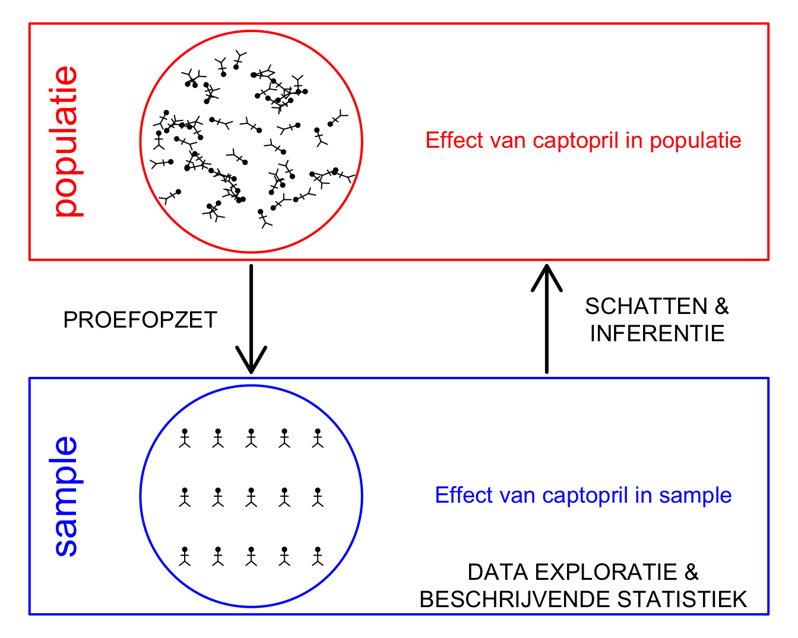
5 Statistische besluitvorming
Alle kennisclips die in dit hoofdstuk zijn verwerkt kan je in deze youtube playlist vinden:
Link naar webpage/script die wordt gebruik in de kennisclips:
5.1 Inleiding
In dit hoofdstuk zullen we werken rond de Captopril dataset. Captopril is een medicijn dat wordt voorgeschreven bij hypertensie en chronisch hartfalen. Het behoort tot de klasse van ACE remmers die activiteit van het renine-angiotensine-aldosteronsysteem onderdrukken. Dat systeem zet het hormoon angiotensineI om in angiotensine II, die een krachtige vaatvernauwende werking heeft. ACE remmers verminderen de omzetting van angiotensine I naar angiotensine II waardoor de vaatvernauwing wordt onderdrukt. Tijdens de ontwikkeling van het medicijn werd een eerste kleine studie opgezet om na te gaan of captopril een bloeddrukverlagend effect heeft bij patiënten met hypertensie.
Observaties bij een klein aantal subjecten mogen een onderzoeker er dan al van overtuigen iets nieuws te hebben ontdekt, maar om anderen te overtuigen zijn objectieve, wetenschappelijke argumenten nodig. Vooreerst moeten de resultaten voldoende representatief zijn, d.w.z. veralgemeenbaar naar een ruime biologische populatie (bvb. naar de volledige populatie van patiënten met hypertensie). Ten tweede moet er rekening mee gehouden worden dat de resultaten variabel zijn, d.w.z. dat men door toeval doorgaans andere resultaten zou vinden indien men een andere, vergelijkbare groep subjecten zou analyseren. Om die reden is het belangrijk om uit te drukken in welke mate de resultaten (bvb. de geschatte bloeddrukdaling) zouden variëren van steekproef tot steekproef en of men op basis van de steekproef kan aantonen dat er een effect is van een behandeling (b.v. dat het middel captopril bloeddrukverlagend werkt in de populatie). Dit vormt het doel van dit hoofdstuk.
Om een representatieve groep subjecten te waarborgen, vertrekt een goede onderzoeksopzet vanuit een belangrijke, precies geformuleerde vraagstelling omtrent een duidelijk omschreven populatie.
Zoals eerder in de cursus aangegeven, zal men in de praktijk om financiële en logistieke redenen bijna nooit een volledige populatie kunnen bestuderen. Populatieparameters kunnen daarom meestal niet exact bepaald worden. Enkel een deel van de populatie kan onderzocht worden, wat men een steekproef noemt. Volgens een gestructureerd design worden daartoe lukraak subjecten uit de doelpopulatie getrokken en geobserveerd. De onbekende parameters worden vervolgens geschat o.b.v. die steekproef en noemt men schattingen. In de praktijk hoopt men uiteraard dat de schattingen die men bekomt op basis van de steekproef vergelijkbaar zijn met de overeenkomstige populatieparameters die men voor de volledige populatie zou bekomen.
Typisch kan de onderzoeksvraag worden vertaald naar een populatieparameter. Ze kan bijvoorbeeld worden uitgedrukt in termen van een populatiegemiddelde, bijvoorbeeld de gemiddelde bloeddrukverandering na de inname van captopril bij patiënten met hypertensie.
5.2 Captopril voorbeeld
Onderzoekers wensen na te gaan of het medicijn Captopril een bloeddruk verlagend effect heeft. De onderzoekers wensen uitspraken te kunnen doen over het effect van captopril op de systolische bloeddruk van huidige en toekomstige patiënten met hypertensie, m.a.w. ze wensen uitspraken te doen over het effect van captopril op het niveau van de Populatie. Ze zullen hiervoor een experiment opzetten om het effect van captopril bestuderen (Proefopzet) waarbij een steekproef (sample) van de patiënten met hypertensie is getrokken uit de populatie. Vervolgens zullen ze de data exploreren en het effect van captopril besturen in de steekproef (Data Exploratie & Beschrijvende Statistiek). Op basis van de steekproef zullen ze dan het effect van captopril Schatten in de populatie en zullen ze a.d.h.v. methoden uit Statistische besluitvorming1 nagaan in hoeverre de geobserveerde effecten in de steekproef veralgemeend kunnen worden naar de algemene populatie toe.
Deze verschillende stappen worden geïllustreerd in Figuur 5.1.
5.2.1 Proefopzet
Bij proefopzet zullen we een gestructureerd design voorstellen om lukraak subjecten uit de doelpopulatie te selecteren, toe te wijzen aan een behandeling en te observeren. We zullen hierbij een response variabele meten, een karakteristiek van interesse. In het captopril voorbeeld is dit de systolische bloeddruk.
In de captopril studie hebben de onderzoekers gebruik gemaakt van een pre-test/post-test design. De patiënten werden at random gekozen uit de populatie. Van elke patiënt in de studie werd de systolische en diasystolische bloeddruk gemeten voor en na het toedienen van captopril. Het pre-test/post-test design heeft als voordeel dat we het effect van het toedienen van captopril op de bloeddruk kunnen meten voor elke patiënt. Een nadeel daarentegen is dat er geen controle behandeling is waardoor we een mogelijke bloeddrukverlaging niet noodzakelijkerwijs kunnen toeschrijven aan de werking van captopril. Er zou immers ook een placebo-effect kunnen optreden waardoor de bloeddruk van de patiënt daalt omdat men weet dat men een medicijn kreeg tegen een hoge bloeddruk.
5.2.2 Data Exploratie & Beschrijvende Statistiek
Eens de data zijn geobserveerd, is het belangrijk om deze te exploreren om inzicht te krijgen in hun verdeling en karakteristieken. Vervolgens zullen we de gegevens samenvatten zodat we het effect van interesse kunnen kwantificeren in de steekproef. In deze studie is de systolische bloeddruk en de diasystolische bloeddruk gemeten voor elke patiënt voor en na het toedienen van captopril. De data is beschikbaar in een tekstbestand met naam captopril.txt op de github pagina https://raw.githubusercontent.com/statOmics/sbc/master/data/captopril.txt. We zullen eerst exploreren welke figuren nuttig zijn in onze context. In wetenschappelijke artikels worden vaak figuren gemaakt van het gemiddelde en de standaardafwijking (zie Figuur 5.2).
#Eerst lezen we de data in.
#Deze bevindt zich in de subdirectory dataset
#Het is een tekstbestand waarbij de kolommen van elkaar gescheiden zijn d.m.v kommas.
#sep=","
#De eerste rij bevat de namen van de variabelen
captopril <- read.table("https://raw.githubusercontent.com/statOmics/sbc/master/data/captopril.txt",header=TRUE,sep=",")
head(captopril) id SBPb DBPb SBPa DBPa
1 1 210 130 201 125
2 2 169 122 165 121
3 3 187 124 166 121
4 4 160 104 157 106
5 5 167 112 147 101
6 6 176 101 145 85captoprilTidy <- captopril |> gather(type,bp,-id)
captoprilTidy |>
group_by(type) |>
summarize_at("bp",list(mean=~mean(.,na.rm=TRUE),
sd=~sd(.,na.rm=TRUE),
n=function(x) sum(!is.na(x)))) |>
mutate(se=sd/sqrt(n))# A tibble: 4 × 5
type mean sd n se
<chr> <dbl> <dbl> <int> <dbl>
1 DBPa 103. 12.6 15 3.24
2 DBPb 112. 10.5 15 2.70
3 SBPa 158 20.0 15 5.16
4 SBPb 177. 20.6 15 5.31captoprilTidy |>
group_by(type) |>
summarize_at("bp",list(mean=~mean(.,na.rm=TRUE),
sd=~sd(.,na.rm=TRUE),
n=function(x) sum(!is.na(x)))) |>
mutate(se=sd/sqrt(n)) |>
ggplot(aes(x=type,y=mean)) +
geom_bar(stat="identity") +
geom_errorbar(aes(ymin=mean-se, ymax=mean+se),width=.2) +
ylim(0,210) +
ylab("blood pressure (mmHg)")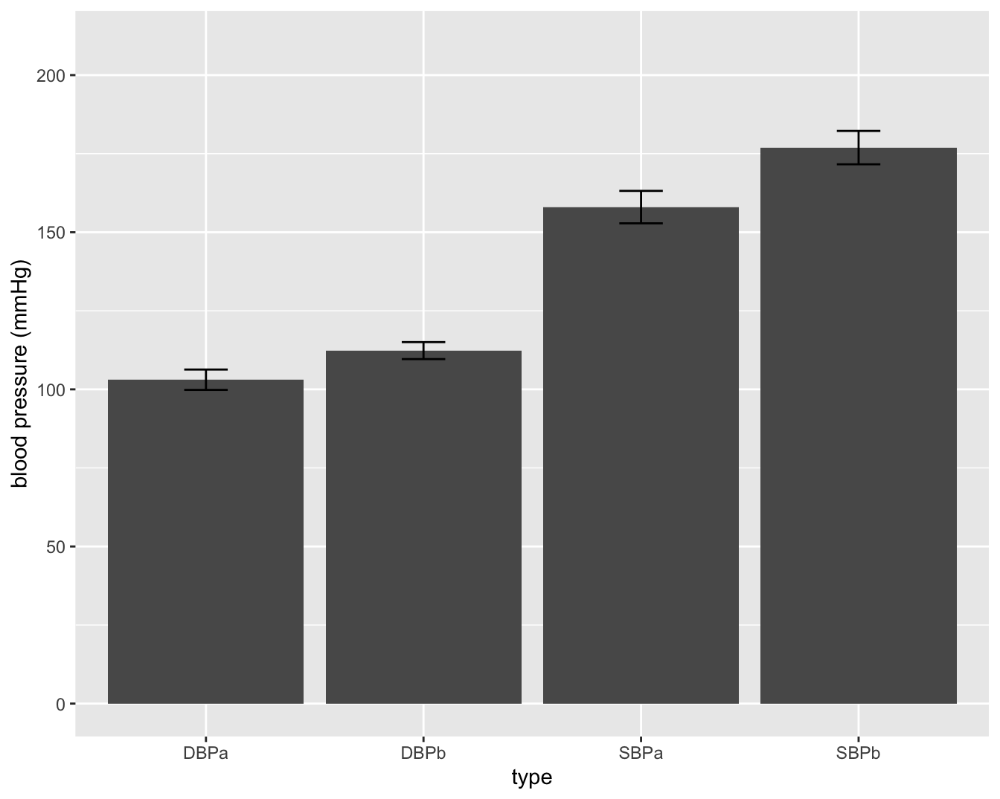
De figuur is echter niet informatief. De hoogte van de balken zegt enkel iets over het gemiddelde. We kunnen onmogelijk weten wat het bereik van de ruwe gegevens is bijvoorbeeld. Daarom is het beter om de gegevens zo ruw mogelijk weer te geven in een plot. We kunnen hiervoor bijvoorbeeld gebruik maken van boxplots (Figuur 5.3). Aangezien we maar over 15 patiënten beschikken kunnen we ook de ruwe datapunten toevoegen. In de figuur zien we dat de systolische bloeddruk in de steekproef gemiddeld lager ligt na de behandeling met captopril. We krijgen ook een duidelijk beeld op het bereik van de data.
#toevoegen van originele datapunten op de plot
#jitter zal de punten random verspreiden
captoprilTidy |>
ggplot(aes(x=type,y=bp)) +
geom_boxplot(outlier.shape=NA) +
geom_point(position="jitter") +
ylim(0,210)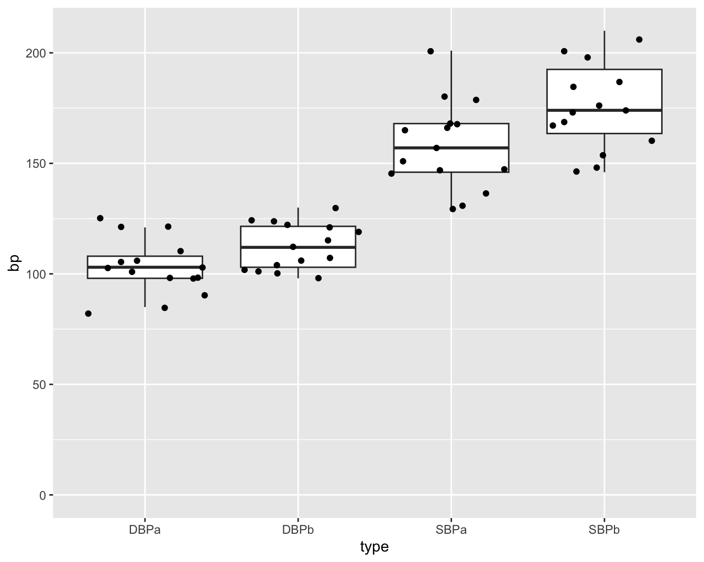
Als alle bloeddrukmetingen onafhankelijk zouden zijn dan is Figuur 5.3 een goede figuur om de data te exploreren. We weten echter dat de metingen voor en na het toedienen van captopril afkomstig zijn van dezelfde patiënt. We kunnen die informatie toevoegen in een dotplot zoals we illustreren voor de systolische bloeddruk in Figuur 5.4. In deze figuur zijn de twee bloeddrukmetingen voor dezelfde persoon verbonden met een lijn. Deze figuur geeft duidelijk weer dat de bloeddruk daalt voor elke patiënt wat een sterke aanwijzing is dat er een effect is van het toedienen van captopril op de systolische bloeddruk.
#De geom_line layer laat ons de bloeddrukmetingen voor dezelfde personen verbinden met een lijn
captoprilTidy |>
filter(type%in%c("SBPa","SBPb")) |>
mutate(type=factor(type,levels=c("SBPb","SBPa"))) |>
ggplot(aes(x=type,y=bp)) +
geom_line(aes(group = id)) +
geom_point()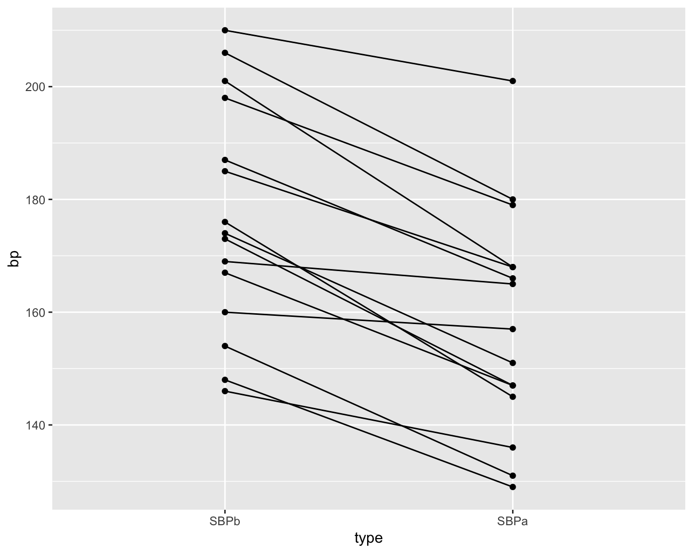
Aangezien we slechts twee bloeddrukmetingen hebben per patiënt kunnen we het effect van captopril ook berekenen per patiënt door het verschil in de systolische bloeddruk na en voor de toediening van captopril te berekenen. Dat is één van de voordelen van een pre-test/post-test design.
#we selecteren de bloeddruk na en voor toedienen
#uit de dataset via naam van variabele d.m.v. $-teken
#en berekenen het verschil
delta <- captopril$SBPa-captopril$SBPb
captopril$deltaSBP <- delta
captopril |>
ggplot(aes(x="Systolic blood pressure",y=deltaSBP)) +
geom_boxplot(outlier.shape=NA) +
geom_point(position="jitter")+
ylab("Difference (mm mercury)") +
xlab("")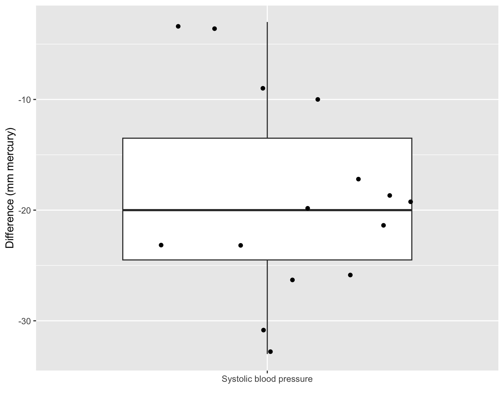
We observeren in Figuur 5.5 een bloeddrukdaling voor elke patiënt in de steekproef wat opnieuw een heel sterke indicatie is voor een gunstig effect van het toedienen van captopril op de bloeddruk. De verschillen in systolische bloeddruk zijn een goede maat om het effect van captopril te bepalen. We kunnen de data als volgt samenvatten.
captopril |>
summarize_at("deltaSBP",list(mean=~mean(.,na.rm=TRUE),
sd=~sd(.,na.rm=TRUE),
n=function(x) sum(!is.na(x)))) |>
mutate(se=sd/sqrt(n)) mean sd n se
1 -18.93333 9.027471 15 2.330883We observeren gemiddeld een systolische bloeddrukdaling van 18.93 mmHg en een standaard deviatie van 9.03 mmHg.
5.2.3 Schatten
Pre-test/post-test design: Het effect van captopril in de steekproef kan worden bestudeerd door het verschil te bepalen in systolische bloeddruk na en voor de behandeling (\(X=\Delta_\text{na-voor}\))! Hoe kunnen we de bloeddrukverschillen modelleren en het effect van het toedienen van captopril schatten?
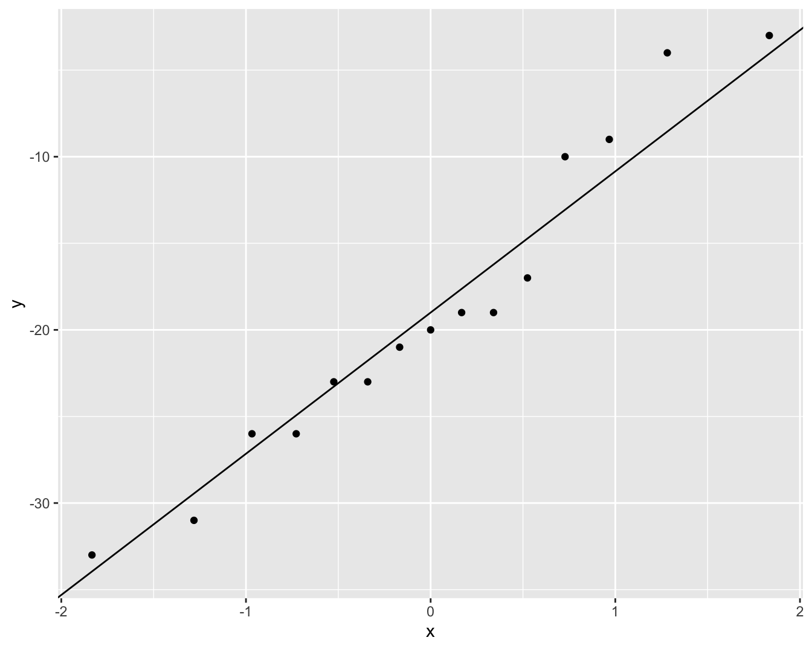
We zien geen grote afwijkingen van Normaliteit in Figuur 5.6. We kunnen de bloeddrukverschillen dus modelleren aan de hand van een Normale verdeling en kunnen het effect van captopril in de populatie beschrijven a.d.h.v. de gemiddelde bloeddrukverschil \(\mu\). Het bloeddrukverschil \(\mu\) in de populatie kan worden geschat a.d.h.v. het steekproefgemiddelde \(\bar x\)=-18.93 en de standaard afwijking \(\sigma\) a.d.h.v. de steekproefstandaarddeviatie \(\text{SD}\)=9.03.
We vragen ons nu af of het effect dat we observeren in de steekproef groot genoeg is om te kunnen spreken van een effect van captopril in de populatie. We weten immers dat onze statistiek voor de schatting van het effect van captopril in de populatie berekend wordt op basis van de gegevens uit de steekproef en daarom zal variëren van steekproef tot steekproef. Het is daarom belangrijk om een inzicht te krijgen in hoe het steekproefgemiddelde zal variëren van steekproef tot steekproef.
5.3 Puntschatters: het steekproefgemiddelde
Zij \(X\) een lukrake trekking uit de populatie van de bestudeerde karakteristiek en onderstel dat haar theoretische verdeling (bvb. de Normale verdeling) een gemiddelde \(\mu\) en variatie \(\sigma^2\) heeft. Onderstel bovendien dat we geïnteresseerd zijn in het gemiddelde \(\mu\) van die karakteristiek in de studiepopulatie. Dan kunnen we \(\mu\) schatten op basis van een eenvoudige lukrake steekproef, \(X_1,...,X_n\), als het (rekenkundig) gemiddelde
\[\begin{equation*} \bar X = \frac{X_1+ X_2+ ... + X_n}{n} = \frac{\sum_{i=1}^{n} X_i}{n} \end{equation*}\]
van de toevalsveranderlijken \(X_1,X_2, ..., X_n\). Dit wordt het steekproefgemiddelde genoemd. Het is belangrijk om te begrijpen dat het steekproefgemiddelde opnieuw een toevalsveranderlijke2 is, d.w.z. dat haar waarde zal variëren van steekproef tot steekproef. Hoewel er slechts 1 populatie is, zijn er heel wat verschillende steekproeven die men daaruit kan trekken. Dat heeft tot gevolg dat verschillende onderzoekers (die verschillende steekproeven uit dezelfde populatie analyseren) verschillende waarden zullen vinden voor het steekproefgemiddelde. Om die reden heeft het steekproefgemiddelde zelf een verdeling. Men zou die theoretisch kunnen bekomen door een oneindig aantal keer een steekproef van \(n\) experimentele eenheden uit de populatie te trekken, telkens het steekproefgemiddelde te berekenen en al deze steekproefgemiddelden vervolgens uit te zetten in een histogram.
We zullen in deze sectie de theoretische verdeling van het steekproefgemiddelde bestuderen. Dat is belangrijk (a) omdat ze ons inzicht geeft in welke mate het resultaat van de studie zou variëren indien men een nieuwe, gelijkaardige studie zou opzetten; en (b) omdat ze ons leert hoe ver \(\bar X\) van het gezochte populatiegemiddelde \(\mu\) kan afwijken. Omdat we slechts over 1 steekproef beschikken (en dus slechts over 1 observatie voor \(\bar X\)), is het niet evident3 hoe we inzicht kunnen ontwikkelen in de verdeling van het steekproefgemiddelde. In het vervolg van deze sectie tonen we hoe dit toch mogelijk is op basis van de beschikbare steekproef wanneer we bepaalde aannames doen over de gegevens.
5.3.1 Overzicht
- Het steekproefgemiddelde is onvertekend
- Precisie van steekproefgemiddelde
- Distributie van steekproefgemiddelde
5.3.2 Het steekproefgemiddelde is onvertekend
In de praktijk hoopt men uiteraard dat de schattingen die men bekomt op basis van de steekproef vergelijkbaar zijn met de overeenkomstige populatieparameters die men voor de volledige populatie zou bekomen.
Of dat zo is, hangt er in eerste instantie vanaf of de steekproef representatief is voor de studiepopulatie en bijgevolg of men al dan niet lukraak individuen uit de populatie gekozen heeft ter observatie (m.a.w. het hangt af van het design van de studie).
Omwille hiervan is het design van een studie van primair belang om lukrake en representatieve steekproeven te garanderen (zie Sectie 3.2). Zoals u doorheen deze cursus zult vaststellen, zullen de meeste wetenschappelijke rapporten daarom een gedetailleerde beschrijving geven van de manier waarop de data bekomen werden. Dit moet de lezer toelaten om de validiteit van de studie te beoordelen.
Algemeen zullen we met \(E(X)\), \(\text{Var}(X)\) en \(\text{Cor}(X,Y)\) respectievelijk het gemiddelde, de variantie en de correlatie noteren van 2 toevalsveranderlijken \(X\) en \(Y\) in de populatie. Deze worden respectievelijk de theoretische verwachtingswaarde van \(X\), theoretische variantie van \(X\) en theoretische correlatie van \(X\) en \(Y\) genoemd. Men zou ze bekomen door voor alle individuen in de populatie de karakteristieken \(X\) en \(Y\) op te meten en vervolgens respectievelijk het rekenkundig gemiddelde, de variantie en de Pearson correlatie te berekenen. Om die reden blijven de rekenregels voor gemiddelden en varianties geldig4 voor populatiegemiddelden en -varianties.
In de onderstelling dat we over een eenvoudige lukrake steekproef beschikken van metingen \(X_1,...,X_n\) voor een karakteristiek \(X\), volgen \(X_1,...,X_n\) allen dezelfde verdeling. In het bijzonder hebben ze allen gemiddelde \(\mu\) en variantie \(\sigma^2\); d.i. \(E(X_1)=...=E(X_n)=\mu\) en \(\text{Var}(X_1)=...=\text{Var}(X_n)=\sigma^2\). Het feit dat we subjecten 1 tot \(n\) lukraak uit de populatie getrokken hebben, staat er m.a.w. garant voor dat verdeling van de karakteristiek in deze steekproef representatief is voor de theoretische verdeling in de doelpopulatie. Gebruik makend van de rekenregels voor gemiddelden, vinden we bijgevolg dat:
\[\begin{eqnarray*} E(\bar X) &=& E \left(\frac{X_1+ X_2+ ... + X_n}{n}\right) \\ &= & \frac{E(X_1)+ E(X_2)+ ... + E(X_n)}{n} \\ &=& \frac{\mu + \mu + ... +\mu}{n} \\ &= & \mu \end{eqnarray*}\]
Dit geeft aan dat het verwachte steekproefgemiddelde in een eenvoudige lukrake steekproef gelijk is aan het beoogde populatiegemiddelde \(\mu\). Men zegt dan dat \(\bar X\) een onvertekende schatter is voor \(\mu\). We kunnen in dat geval verwachten dat de waarde \(\bar x\) die we schatten voor \(\mu\) op basis van de steekproef, niet systematisch hoger of lager dan de gezochte waarde \(\mu\) zal zijn. Het spreekt voor zich dat dit een zeer wenselijke eigenschap is.
Definitie 5.1 (Onvertekende schatter)
Een statistiek of schatter \(S\) voor een parameter \(\theta\) wordt onvertekend genoemd als haar theoretische verwachtingswaarde gelijk is aan die parameter, d.w.z. \(E(S)= \theta\).
Einde definitie
5.3.3 Imprecisie/standard error
Het feit dat het steekproefgemiddelde (over een groot aantal vergelijkbare studies) gemiddeld gezien niet afwijkt van de gezochte waarde \(\mu\), impliceert niet dat ze niet rond die waarde varieert. Om inzicht te krijgen hoe dicht we het steekproefgemiddelde bij \(\mu\) mogen verwachten, wensen we bijgevolg ook haar variabiliteit te kennen.
We illustreren dit met de NHANES studie
- We zullen 15 vrouwen willekeurig selecteren uit de NHANES studie en zullen hun cholesterolgehalte registreren.
- We herhalen dit 50 keer om de variatie van steekproef tot steekproef te beoordelen
- We plotten de boxplot voor iedere steekproef en duiden het gemiddelde aan.
set.seed(2105)
library(NHANES)
fem <- NHANES |>
filter(Gender=="female" & !is.na(DirectChol)) |>
select("DirectChol")
n <- 15 # number of subjects per sample
nSim <- 50 # number of simulations
femSamp <- matrix(nrow=n,ncol=nSim)
for (j in 1:nSim)
{
femSamp[,j] <- sample(fem$DirectChol,15)
if (j<4) {
p <- femSamp |>
log2() |>
data.frame() |>
gather("sample","log2cholesterol") |>
ggplot(aes(x=sample,y=log2cholesterol)) +
geom_boxplot() +
stat_summary(
fun.y=mean,
geom="point",
shape=19,
size=3,
color="red",
fill="red") +
geom_hline(yintercept = mean(fem$DirectChol |> log2())) +
ylab("cholesterol (log2)")
print(p)
}
}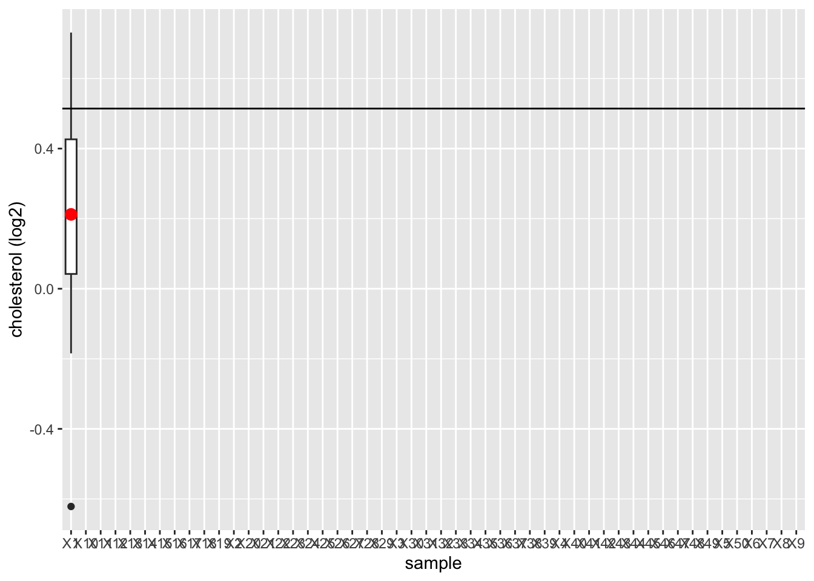
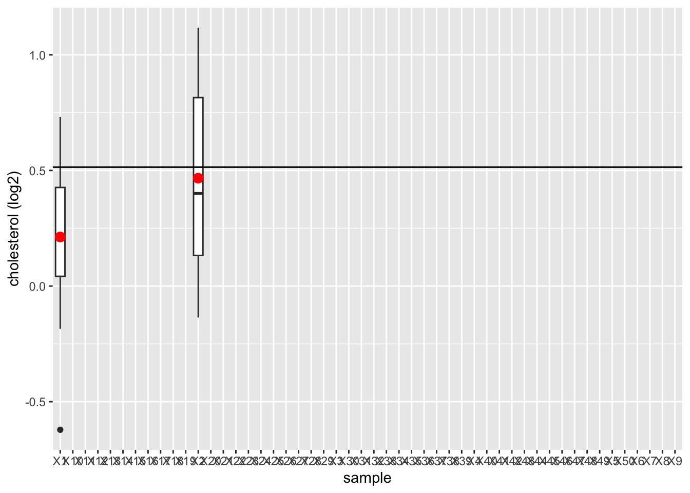
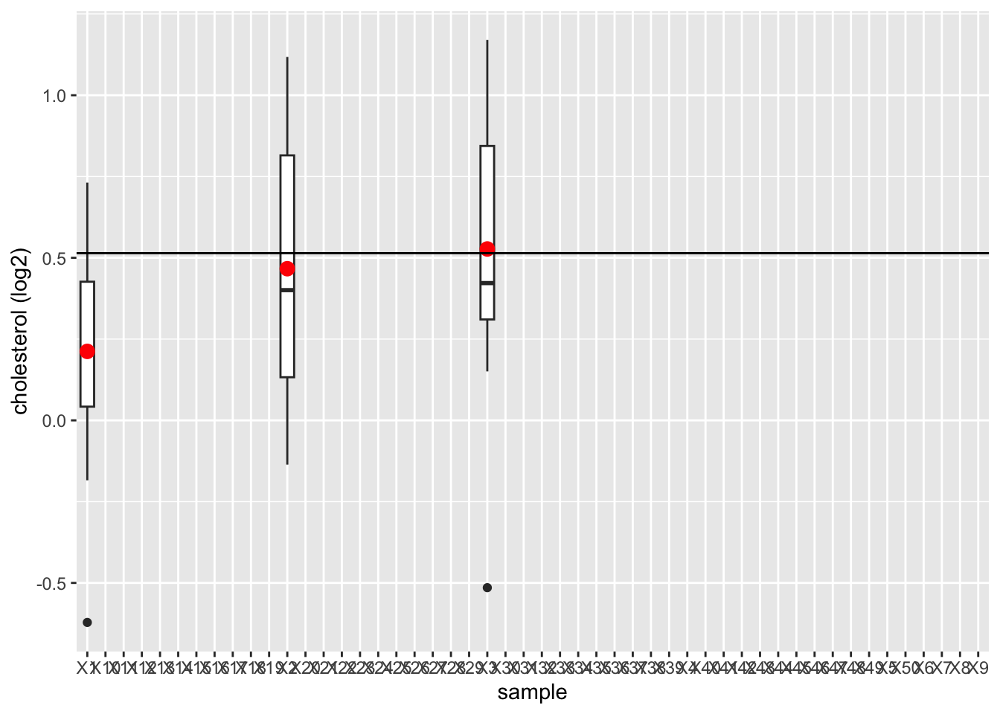
femSamp |>
log2() |>
data.frame() |>
gather("sample","log2cholesterol") |>
ggplot(aes(x=sample,y=log2cholesterol)) +
geom_boxplot() +
stat_summary(fun.y=mean, geom="point", shape=19, size=3, color="red", fill="red") +
geom_hline(yintercept = mean(fem$DirectChol |> log2())) +
ylab("cholesterol (log2)")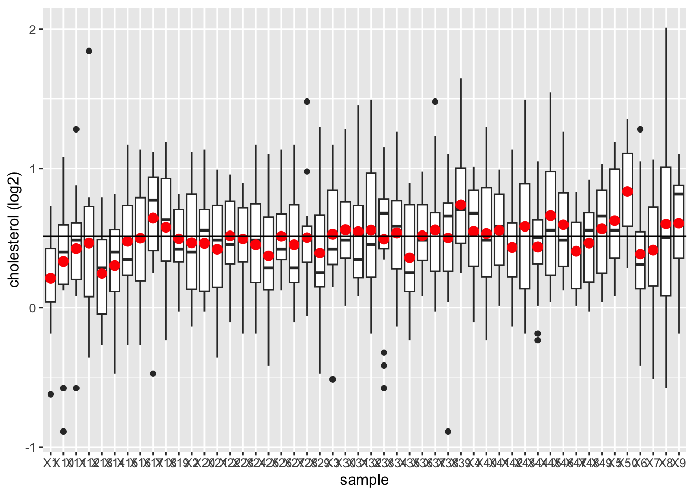
We observeren dat het steekproefgemiddelde fluctueert rond het gemiddelde van de populatie.
Opdracht:
- Kopieer de code
- Vergroot de steekproefgrootte tot 100 proefpersonen
- Wat observeer je? ***
Hoe doen we dit op basis van een enkele steekproef?
Om inzicht te krijgen in de variabiliteit op \(\bar X\) op basis van een enkele steekproef zullen we assumpties moeten maken:
We zullen ervan uitgaan dat de metingen \(X_1, X_2, ..., X_n\) werden gemaakt bij \(n\) onafhankelijke observationele eenheden. In woorden betekent onafhankelijkheid dat elk subject een volledig nieuw stukje informatie bijdraagt tot het geheel. Een voorbeeld van afhankelijkheid tussen studie-objecten komt klassiek uit de studie van kankerverwekkende stoffen. Bij testen op zwangere ratten, worden metingen gedaan op hun levende foetussen of boorlingen. Foetussen van eenzelfde moeder delen dezelfde genetische achtergrond en zijn daarom waarschijnlijk meer aan elkaar gelijk dan foetussen van verschillende moeders. Zelfs al zijn de moeders die opgenomen worden in zo’n studie onafhankelijk van elkaar gekozen, de verschillende kleine ratjes leveren niet langer onafhankelijke stukjes informatie: via de gedeelde moeders is een afhankelijkheid ingebouwd.
Afhankelijke gegevens worden ondermeer ook verzameld in pre-test/post-test designs en cross-over studies.
Voor de Captopril studie bijvoorbeeld hebben we afhankelijke observaties
- Bloeddrukmetingen voor (\(Y_{i,before}\)) en na (\(Y_{i,after}\)) toediening van captopril aan dezelfde patiënt \(i=1,\ldots,n\).
- We hebben ze omgezet in n onafhankelijke metingen door het verschil \(Y_{i,na}-Y_{i,voor}\) te nemen.
De volgende eigenschap illustreert de noodzaak om over onafhankelijke gegevens te beschikken, wil men gemakkelijk de variabiliteit van het steekproefgemiddelde kunnen bepalen.
Eigenschap
Als \(X\) en \(Y\) onafhankelijke toevalsveranderlijken zijn, dan geldt5:
\[\begin{equation*} \text{Var}(X+Y) = \text{Var}(X) + \text{Var}(Y) \end{equation*}\]
Algemeen (d.i. voor mogelijks afhankelijke toevalsveranderlijken \(X\) en \(Y\)) geldt voor constanten \(a\) en \(b\):
\[\begin{eqnarray*} \text{Var}(aX+bY) &=& a^2 \text{Var}(X) + b^2 \text{Var}(Y) + 2 ab {% \text{Cor}}(X,Y)\sqrt{\text{Var}(X)}\sqrt{\text{Var}(Y)} \end{eqnarray*}\]
Einde Eigenschap
Een veelgemaakte fout is dat men beweert dat \(\text{Var}(X-Y)=\text{Var}(X)-\text{Var}(Y)\). Niets is minder waar! Stel bijvoorbeeld dat de lengte \(X\) van moeders en de lengte \(Y\) van vaders evenveel variëren zodat \(\text{Var}(X)=\text{Var}(Y)\). Dan impliceert dat nog niet dat als je het verschil \(X-Y\) neemt tussen de lengte van een moeder en haar partner, dat dit verschil variantie nul heeft; d.w.z. dat het niet varieert en bijgevolg voor alle moeder-vader paren exact dezelfde waarde aanneemt! Bovenstaande formules geven inderdaad integendeel aan dat:
\[\begin{equation*} \text{Var}(X-Y) = \text{Var}(X) + \text{Var}(Y) -2{\text{Cor}}(X,Y)\sqrt{\text{Var}(X)}\sqrt{\text{Var}(Y)}. \end{equation*}\]
5.3.3.1 Variantie schatter voor \(\bar X\)
Gebruik makend van deze rekenregels en steunend op de onafhankelijkheid van de observaties (waarvan we gebruik maken in de derde overgang, *) kunnen we nu verder berekenen dat:
\[\begin{eqnarray*} \text{Var}(\bar X)&=&\text{Var} \left(\frac{X_1+ X_2+ ... + X_n}{n}\right) \\ &= & \frac{\text{Var} (X_1+ X_2+ ... + X_n)}{n^2} \\ &\overset{*}{=} & \frac{\text{Var}(X_1)+ \text{Var}(X_2)+ ... + \text{Var}(X_n)}{n^2} \\ &=& \frac{\sigma^2 + \sigma^2 + ... \sigma^2}{n^2} \\ &= & \frac{\sigma^2}{n}. \end{eqnarray*}\]
Het steekproefgemiddelde heeft dus een spreiding (standaarddeviatie) rond haar gemiddelde \(\mu\) die \(\sqrt{n}\) keer kleiner is dan de deviatie op de oorspronkelijke observaties. Vandaar dat we meer over \(\mu\) kunnen leren door het steekproefgemiddelde \(\bar X\) te observeren dan door een individuele waarde \(X\) te observeren.
Definitie 5.2 (Standaard error)
De standaarddeviatie van \(\bar{X}\) is \(\sigma/\sqrt{n}\) en krijgt in de literatuur de speciale naam {standard error} van het gemiddelde. Algemeen noemt men de standaarddeviatie van een schatter voor een bepaalde parameter \(\theta\), de standard error van die schatter. Men noteert dit als \(SE\).
Einde definitie
Voorbeeld 5.1 (Gemiddelde bloeddrukverandering)
Stel dat we \(n = 15\) systolische bloeddrukobservaties zullen meten en dat de standaarddeviatie van de bloeddrukverschillen in de populatie \(\sigma = 9.0\) mmHg bedraagt, dan is standard error (SE) van de systolische bloeddrukveranderingen \(\bar X\):
\[ SE= \frac{9.0}{\sqrt{15}}=2.32\text{mmHg.} \]
Meestal is \(\sigma\), en bijgevolg de standard error van het steekproefgemiddelde, ongekend. Men moet dan de standard error schatten. Een voor de hand liggende schatter met goede eigenschappen is \(S/\sqrt{n},\) waarbij \(S^2\) de steekproefvariantie van de reeks observaties \(X_1,...,X_n\) is en \(S\) de steekproef standaarddeviatie wordt genoemd.
Voor het captopril voorbeeld kunnen we de standard error op het steekproefgemiddelde van de bloeddrukveranderingen schatten in R als
n <- length(delta)
se <- sd(delta)/sqrt(n)
se[1] 2.3308835.3.3.2 Standaarddeviatie vs standard error
We illustreren dit opnieuw a.d.h.v. herhaalde steekproeven:
Verschillende steekproef groottes: 10, 50, 100
Neem 1000 steekproeven per steekproef grootte van de NHANES studie, voor iedere steekproef berekenen we:
- Het gemiddelde
- De steekproefstandaarddeviatie
- de standaard error
We maken een boxplot van de steekproefstandaardevaties en de standaard errors voor de verschillende steekproefgroottes
In plaats van een for loop te gebruiken zullen we de sapply functie gebruiken die efficiënter is. Het neemt een vector of lijst als invoer en past de functie toe op ieder element van de vector of lijst.
set.seed(24)
femSamp10 <- sapply(
1:1000,
function(j,x,size) sample(x,size),
size=10,
x=fem$DirectChol)
femSamp50 <- sapply(
1:1000,
function(j,x,size) sample(x,size),
size=50,
x=fem$DirectChol)
femSamp100 <- sapply(
1:1000,
function(j,x,size) sample(x,size),
size=100,
x=fem$DirectChol)
res<-rbind(
femSamp10 |>
log2()|>
as.data.frame() |>
gather(sample,log2Chol) |>
group_by(sample)|>
summarize_at("log2Chol",
list(median=~median(.,na.rm=TRUE),
mean=~mean(.,na.rm=TRUE),
sd=~sd(.,na.rm=TRUE),
n=function(x) sum(!is.na(x)))) |>
mutate(se=sd/sqrt(n)) ,
femSamp50 |>
log2() |>
as.data.frame() |>
gather(sample,log2Chol) |>
group_by(sample)|>
summarize_at("log2Chol",
list(median=~median(.,na.rm=TRUE),
mean=~mean(.,na.rm=TRUE),
sd=~sd(.,na.rm=TRUE),
n=function(x) sum(!is.na(x)))) |>
mutate(se=sd/sqrt(n)),
femSamp100 |>
log2() |>
as.data.frame() |>
gather(sample,log2Chol) |>
group_by(sample)|>
summarize_at("log2Chol",
list(median=~median(.,na.rm=TRUE),
mean=~mean(.,na.rm=TRUE),
sd=~sd(.,na.rm=TRUE),
n=function(x) sum(!is.na(x)))) |>
mutate(se=sd/sqrt(n))
)Gemiddelden
We illustreren de impact van steekproefgrootte op de distributie van de gemiddeldes van verschillende steekproeven
res |>
ggplot(aes(x= n |> as.factor(),y = mean)) +
geom_boxplot() +
ylab("Direct cholesterol (log2)") +
xlab("sample size")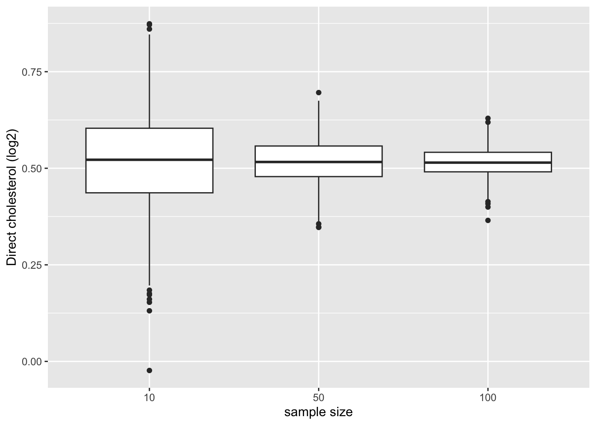
- Merk op dat de variatie van de steekproefgemiddelden inderdaad afneemt naarmate de steekproefgrootte toeneemt. De schatting wordt dus nauwkeuriger naarmate de steekproefgrootte toeneemt.
Standard deviatie
We illustreren nu de impact van de steekproefgrootte op de verdeling van de standaarddeviatie van de verschillende steekproeven
res |>
ggplot(aes(x=n|>as.factor(),y=sd)) +
geom_boxplot() +
ylab("standard deviation") +
xlab("sample size")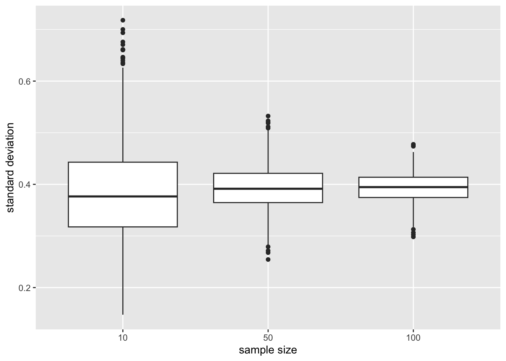
De standaarddeviatie blijft vergelijkbaar voor de steekproefgroottes. Het is gecentreerd rond dezelfde waarde: de standaarddeviatie in de populatie. Het vergroten van de steekproefgrootte heeft inderdaad geen invloed op de variabiliteit in de populatie!
Opnieuw zien we dat de variabiliteit van de standaarddeviatie afneemt naarmate de steekproefgrootte toeneemt. De standaarddeviatie kan dus ook nauwkeuriger worden geschat naarmate de steekproefgrootte toeneemt.
Standaard error van het gemiddelde
Ten slotte illustreren we de impact van de steekproefgrootte op de verdeling van de standaarddeviatie van het gemiddelde van de verschillende steekproeven, de standaard error.
res |>
ggplot(aes(x=n|>as.factor(),y=se)) +
geom_boxplot() +
ylab("standard error") +
xlab("sample size")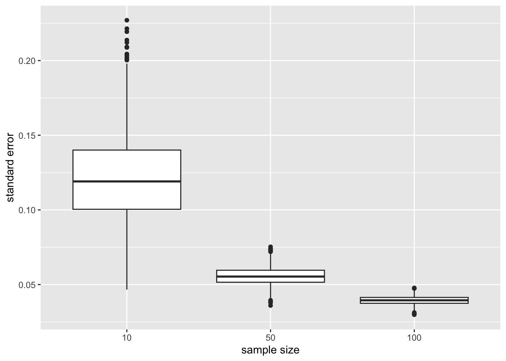
- De standaard error (de schatter voor de nauwkeurigheid van het steekproefgemiddelde) vermindert aanzienlijk naarmate de steekproefgrootte toeneemt, wat opnieuw bevestigt dat de schatting van het steekproefgemiddelde nauwkeuriger wordt.
5.3.3.3 Normaal verdeelde gegevens
Als de gegevens Normaal verdeeld zijn, dan zijn er meerdere onvertekende schatters voor het populatiegemiddelde \(\mu\), bvb. het steekproefgemiddelde en de mediaan. Men kan echter aantonen dat in dat geval het steekproefgemiddelde \(\bar{X}\) de onvertekende schatter is voor \(\mu\) met de kleinste standard error. Dat betekent dat ze gemiddeld minder afwijkt van de echte parameterwaarde dan de mediaan, die veel meer varieert van steekproef tot steekproef. Het steekproefgemiddelde is bijgevolg een schatter die accuraat is (want onvertekend) en meest precies (kleinste standaarddeviatie).
- We illustreren dit voor herhaalde steekproeven met steekproefgrootte 10
res |>
filter(n == 10) |>
select(mean,median) |>
gather(type,estimate) |>
ggplot(aes(x = type,y = estimate)) +
geom_boxplot() +
geom_hline(yintercept = fem$DirectChol |>
log2() |>
mean()) +
ggtitle("10 personen")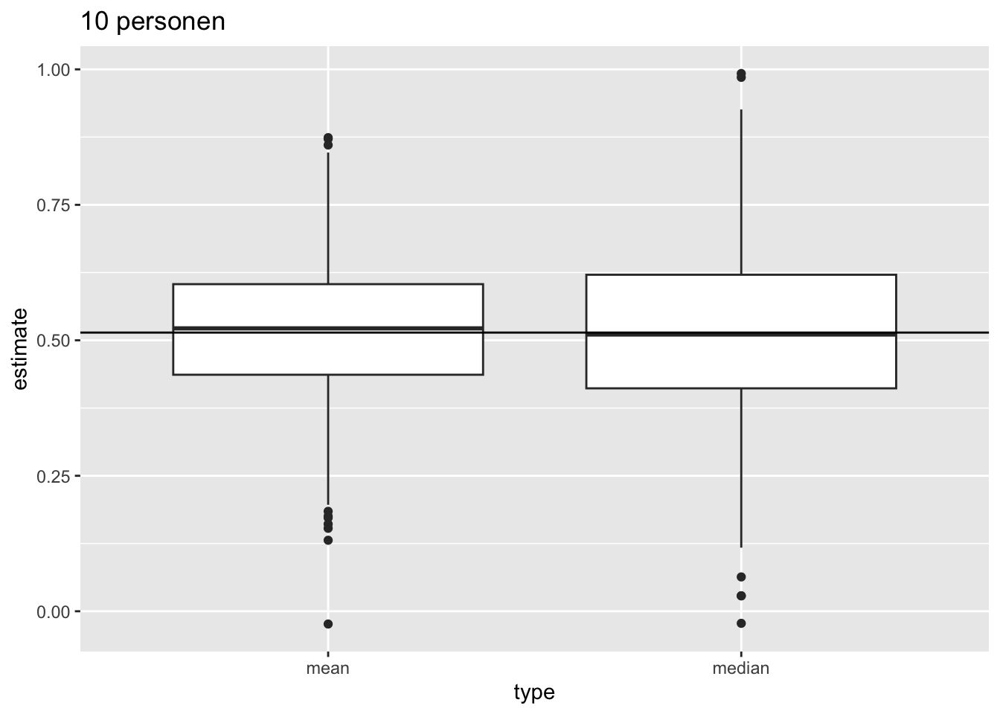
Vervolgens vergelijken we de verdeling van het gemiddelde en de mediaan in herhaalde steekproeven van steekproefgrootte 50.
res |>
filter(n == 50) |>
select(mean, median) |>
gather(type, estimate) |>
ggplot(aes(x = type,y = estimate)) +
geom_boxplot()+
geom_hline(yintercept = fem$DirectChol |>
log2() |>
mean()) +
ggtitle("50 personen")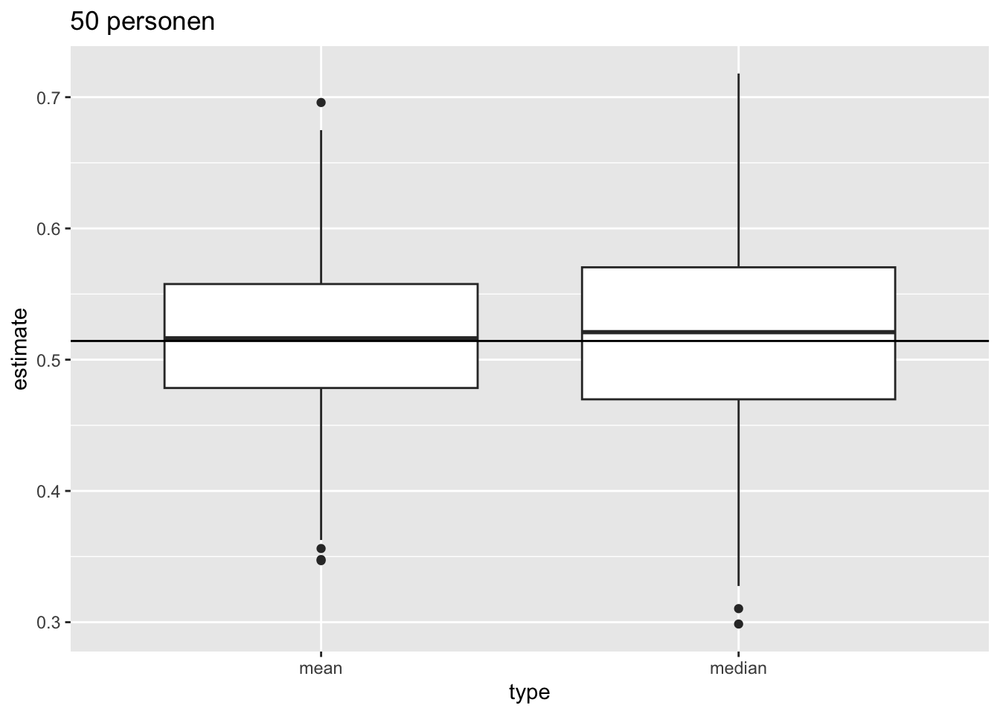
5.3.4 Verdeling van het steekproefgemiddelde
Om ondermeer goed de betekenis van de standard error te kunnen vatten, moeten we van \(\bar X\) niet alleen het gemiddelde en de standaarddeviatie, maar ook de exacte verdeling kennen. De standard error is immers een standaardeviatie (bvb. van het steekproefgemiddelde), waarvan de betekenis het meest duidelijk is wanneer de metingen (in dit geval, het steekproefgemiddelde) Normaal verdeeld zijn. In het bijzonder geval dat de individuele observaties \(X_i\) een Normale verdeling hebben met gemiddelde \(\mu\) en variantie \(\sigma^2\), kan men aantonen dat ook \(\bar X\) Normaal verdeeld is met gemiddelde \(\mu\) en variantie \(\sigma^2/n.\)
5.3.4.1 NHANES: cholesterol
We illustreren dit nogmaals met een simulatie gebruik makende van de NHANES-studie. De log2-cholesterolwaarden zijn normaal verdeeld.
fem |>
ggplot(aes(x = DirectChol |> log2()))+
geom_histogram(aes(y = ..density.., fill = ..count..)) +
xlab("Direct cholesterol (log2)") +
stat_function(
fun = dnorm,
color = "red",
args = list(
mean=mean(fem$DirectChol|>log2()),
sd = sd(fem$DirectChol|>log2())
)
) +
ggtitle("Alle vrouwen in NHANES studie")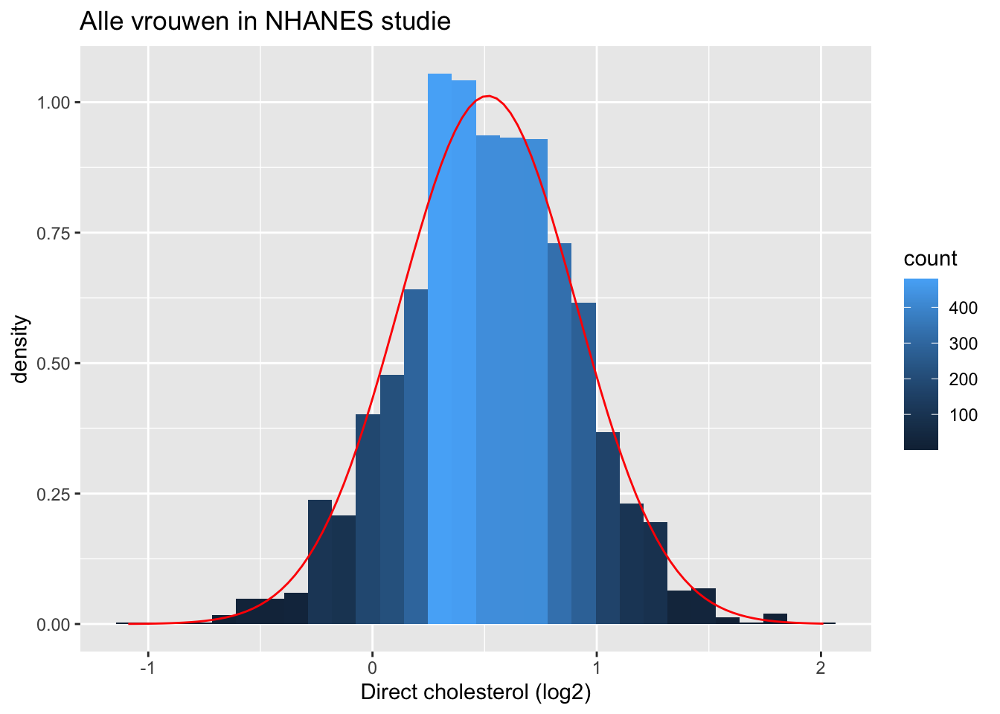
fem |>
ggplot(aes(sample = DirectChol |> log2())) +
stat_qq() +
stat_qq_line() +
ggtitle("Alle vrouwen in NHANES study")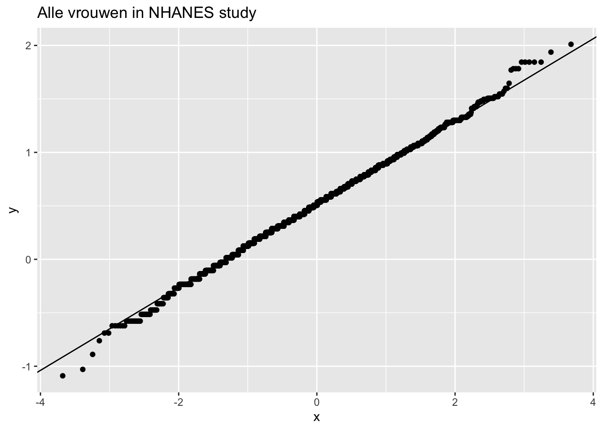
5.3.4.1.1 Evalueer de verdeling van het gemiddelde voor steekproeven van grootte 10
Nu onderzoeken we de resultaten voor de steekproefgrootte van 10.
We bekijken eerst de plot voor de eerste steekproef.
log2Chol <- femSamp10[,1] |>
log2()
data.frame(log2Chol) |>
ggplot(aes(x=log2Chol))+
geom_histogram(aes(y=..density.., fill=..count..),bins=10) +
xlab("Direct cholesterol (log2)") +
stat_function(
fun=dnorm,
color="red",
args=list(
mean=femSamp10[,1]|>log2()|>mean(), sd=femSamp10[,1]|>log2()|>sd())
) +
ggtitle("10 random females") +
xlim(fem$DirectChol |> log2() |> range())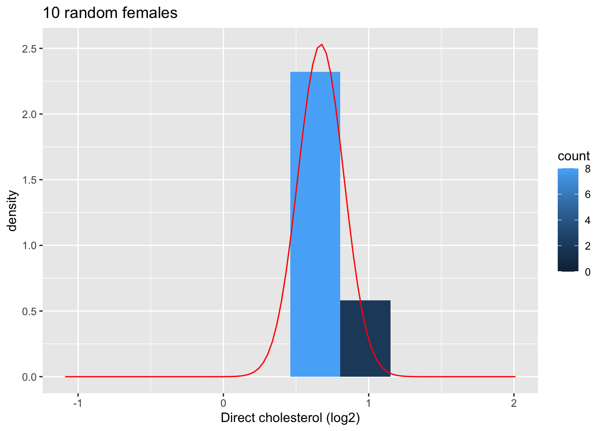
Vervolgens kijken we naar de verdeling van het steekproefgemiddelde over 1000 steekproeven van steekproefgrootte 10.
meanLog2Chol <- femSamp10 |>
log2() |>
colMeans()
data.frame(meanLog2Chol) |>
ggplot(aes(x=meanLog2Chol)) +
geom_histogram(aes(y=..density.., fill=..count..),bins=15) +
xlab("Mean cholesterol (log2)") +
stat_function(
fun=dnorm,
color="red",
args=list(
mean=femSamp10|>log2()|> colMeans() |> mean(),
sd=femSamp10|>log2()|> colMeans() |> sd())
) +
ggtitle("Means on 10 females")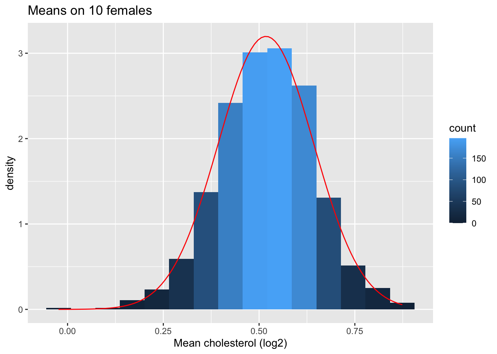
meanLog2Chol <- femSamp10 |>
log2()|>
colMeans()
data.frame(meanLog2Chol) |>
ggplot(aes(sample=meanLog2Chol)) +
stat_qq() +
stat_qq_line() +
ggtitle("Means on 10 females")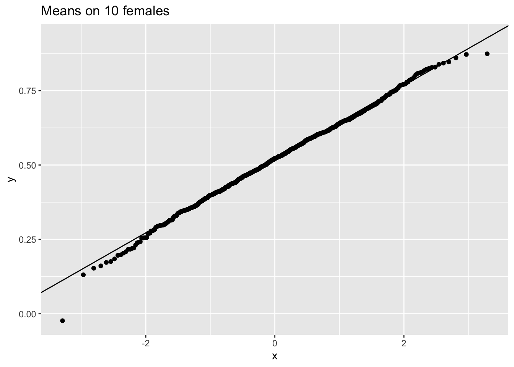
We hebben dus bevestigd dat het gemiddelde ongeveer normaal verdeeld is voor studies met 10 vrouwen, terwijl de originele gegevens ongeveer normaal verdeeld zijn.
5.3.4.2 Captopril studie
In het captopril voorbeeld zagen we dat de systolische bloeddrukverandering approximatief normaal verdeeld is. De standard error op de bloeddrukverandering bedroeg 2.33 mm Hg. Dus op 100 studies met n = 15 subjecten, verwachten we dat de geschatte gemiddelde systolische bloeddrukafwijking (\(\bar X\)) op minder dan 2 × 2.33 = 4.66mm Hg van het werkelijke populatiegemiddelde (\(\mu\)) ligt in 95 studies.
5.3.4.3 Niet-normaal verdeelde data
Als individuele observaties geen normale verdeling hebben, is \(\bar X\) nog steeds normaal verdeeld wanneer het aantal observaties groot genoeg is.
Hoe groot moet de steekproef zijn om de normale benadering te laten werken hangt af van de scheefheid van de distributie!
5.3.4.3.1 NHANES: cholesterol
- We kunnen dit evalueren in de NHanes-studie als we de gegevens niet log2 transformeren.
fem |>
ggplot(aes(x=DirectChol))+
geom_histogram(aes(y=..density.., fill=..count..)) +
xlab("Direct cholesterol") +
stat_function(
fun=dnorm,
color="red",
args=list(
mean=mean(fem$DirectChol),
sd=sd(fem$DirectChol))
) +
ggtitle("All females in Nhanes study")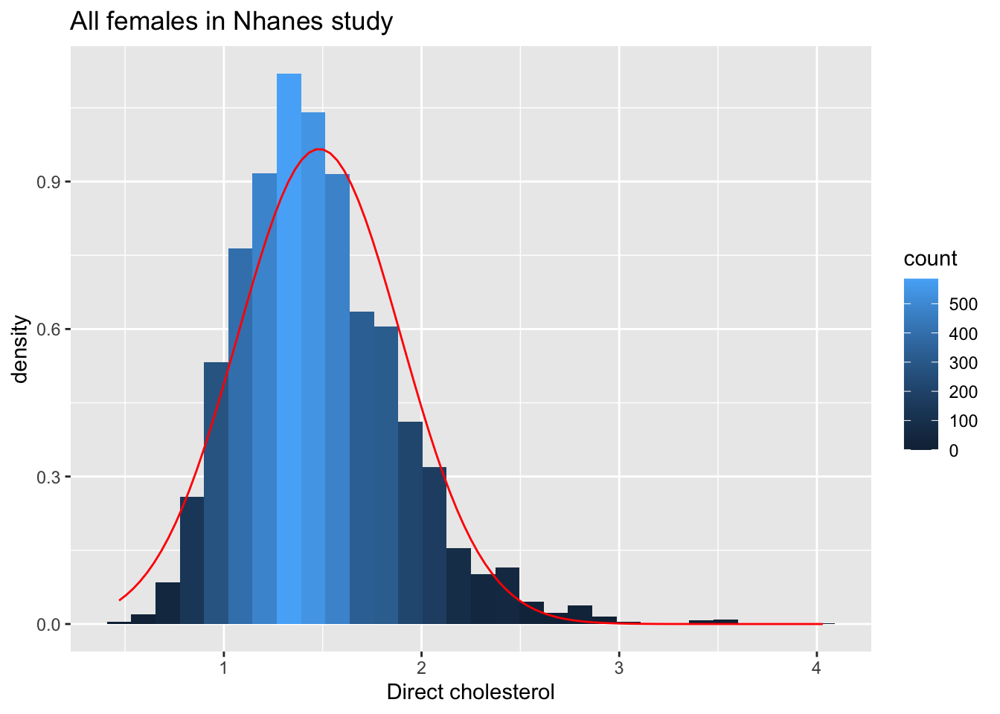
fem |>
ggplot(aes(sample=DirectChol)) +
stat_qq() +
stat_qq_line() +
ggtitle("All females in Nhanes study")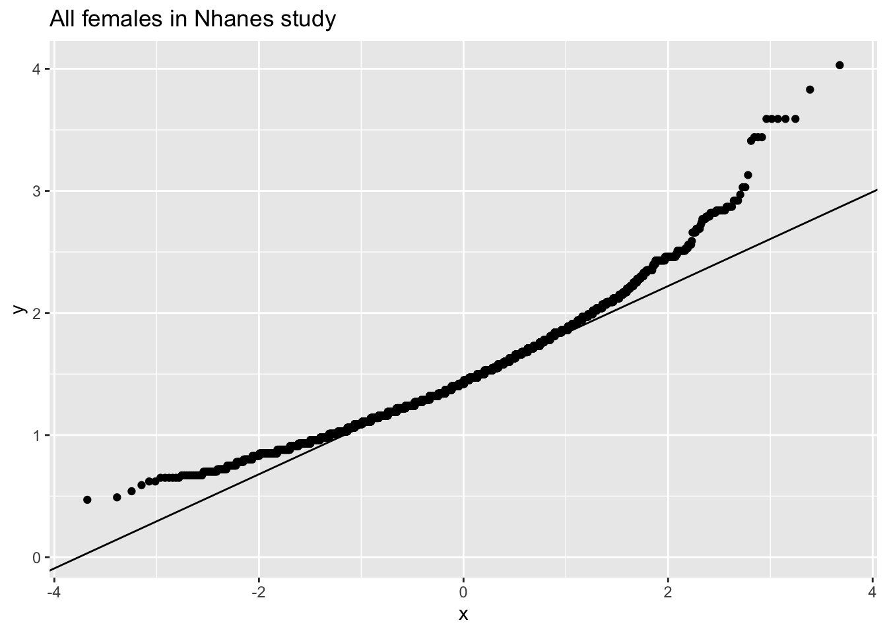
De cholesterol data zijn duidelijk niet-normaal verdeeld.
Verdeling van het steekproefgemiddelde voor verschillende steekproefgroottes
set.seed(121)
femSamp5 <- sapply(
1:1000,
function(j,x,size) sample(x,size),
size = 5,
x = fem$DirectChol)
meanChol <- femSamp5 |>
colMeans()
data.frame(meanChol) |> ggplot(aes(x=meanChol)) +
geom_histogram(aes(y=..density.., fill=..count..),bins=15) +
xlab("Mean cholesterol") +
stat_function(
fun=dnorm,
color="red",
args=list(
mean=femSamp5|> colMeans() |> mean(),
sd=femSamp5|> colMeans() |> sd())
) +
ggtitle("Means on 5 females")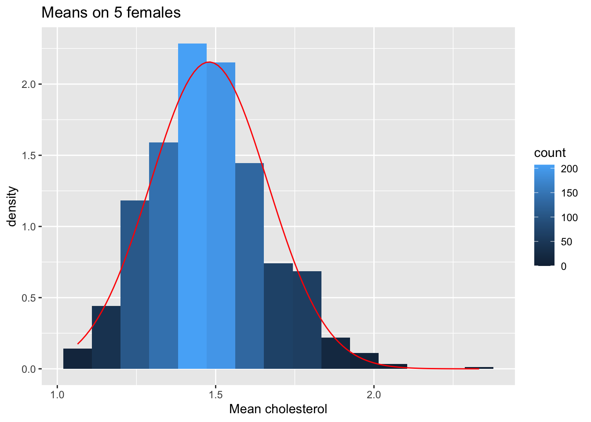
meanChol <- femSamp5 |>
colMeans()
data.frame(meanChol) |>
ggplot(aes(sample=meanChol)) +
stat_qq() +
stat_qq_line() +
ggtitle("Means on 5 females")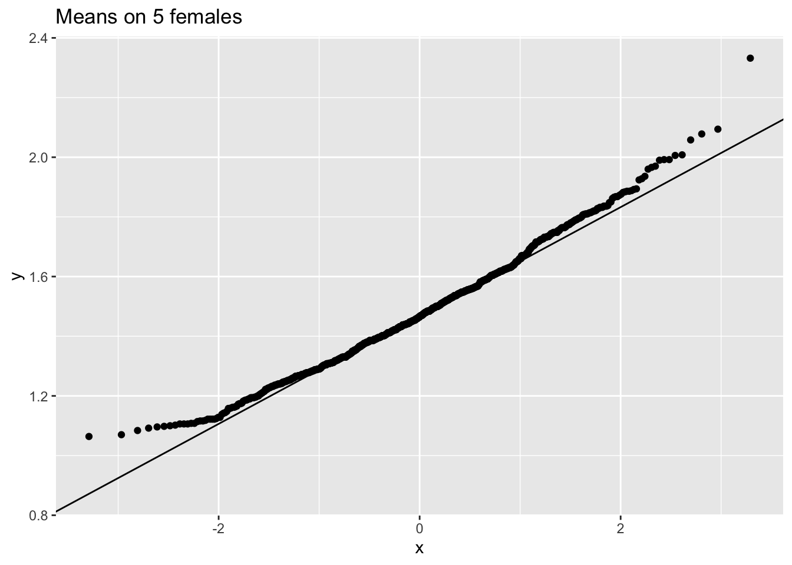
meanChol <- femSamp10 |>
colMeans()
data.frame(meanChol) |> ggplot(aes(x=meanChol)) +
geom_histogram(aes(y=..density.., fill=..count..),bins=15) +
xlab("Mean cholesterol") +
stat_function(
fun=dnorm,
color="red",
args=list(
mean=femSamp10|> colMeans() |> mean(),
sd=femSamp10|> colMeans() |> sd())
) +
ggtitle("Means on 10 females")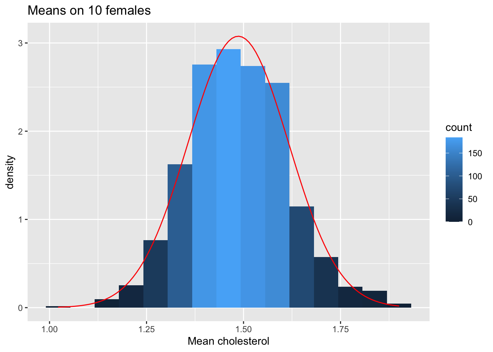
meanChol <- femSamp10 |>
colMeans()
data.frame(meanChol) |>
ggplot(aes(sample=meanChol)) +
stat_qq() +
stat_qq_line() +
ggtitle("Means on 10 females")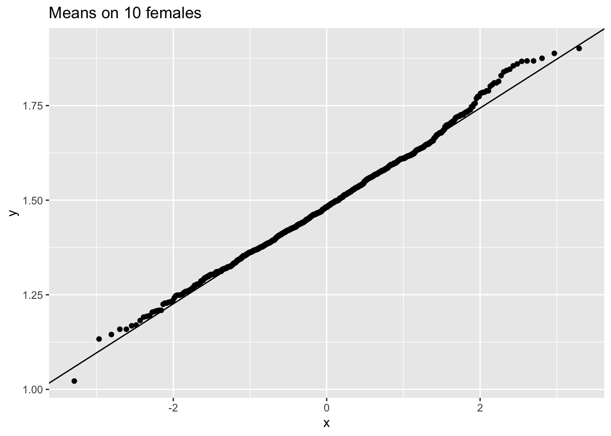
meanChol <- femSamp50 |>
colMeans()
data.frame(meanChol) |>
ggplot(aes(sample=meanChol)) +
stat_qq() +
stat_qq_line() +
ggtitle("Means on 50 females")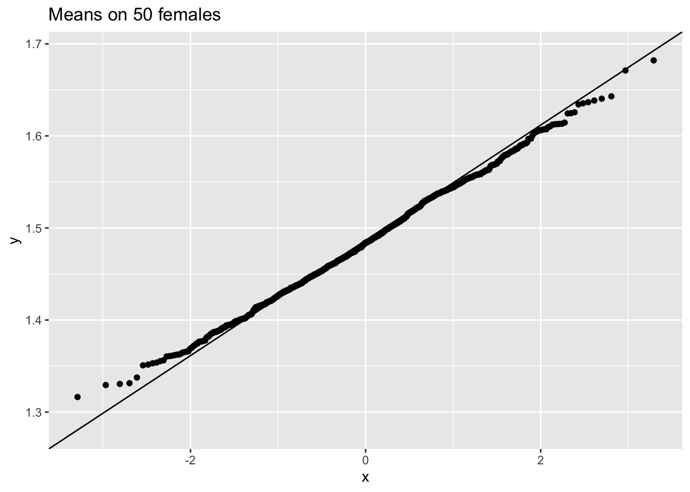
meanChol <- femSamp100 |>
colMeans()
data.frame(meanChol) |>
ggplot(aes(sample=meanChol)) +
stat_qq() +
stat_qq_line() +
ggtitle("Means on 100 females")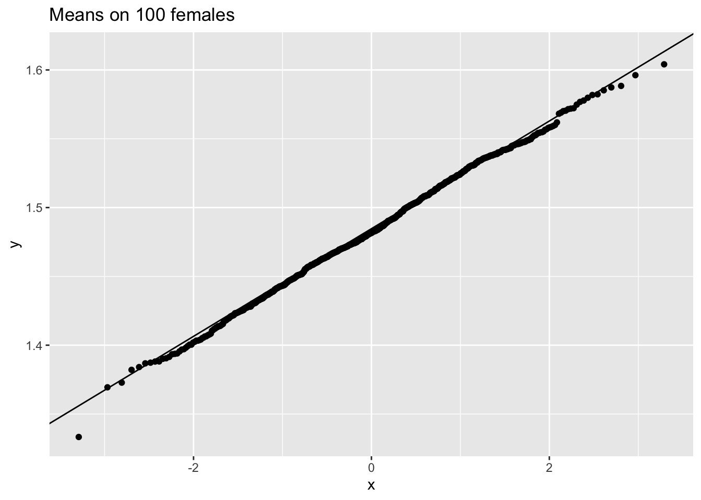
We merken op dat wanneer de data niet normaal verdeeld zijn, de verdeling van het steekproefgemiddelde niet normaal verdeeld is over kleine steekproeven
Voor grote steekproeven is het steekproefgemiddelde van niet-normale gegevens echter nog steeds ongeveer normaal verdeeld.
5.3.4.4 Centrale Limietstelling (CLT)
Stel dat \(X_1, X_2, \dots, X_n, \; n\) onafhankelijke lukrake trekkingen van de toevalsveranderlijke \(X\) voorstellen, met allen dezelfde theoretische verdeling. Laat \(X\) gemiddelde \(\mu\) en variantie \(\sigma^2\) hebben maar verder een ongespecifieerde verdeling, dan wordt de verdeling van het steekproefgemiddelde \(\bar{X}_n = {\sum_{i=1}^{n} X_i}/{n}\) naarmate \(n\) groter wordt steeds beter benaderd door de Normale verdeling met gemiddelde \(\mu\) en variantie \(\sigma^2/n.\)
Einde Stelling
Deze belangrijke eigenschap zal ons toelaten om de meeste technieken die in deze cursus aan bod komen toe te passen op een zeer uitgebreid spectrum van experimenten.
5.4 Intervalschatters
In de vorige sectie hebben we vastgesteld dat het steekproefgemiddelde van steekproef tot steekproef varieert rond het populatiegemiddelde dat we willen schatten. Om die reden wensen we in deze sectie een interval rond het steekproefgemiddelde te bepalen waarbinnen we het populatiegemiddelde met gegeven kans (bvb. 95% kans) kunnen verwachten. In Sectie 5.4.1 zullen we dit uitwerken voor het geval waar de populatievariantie \(\sigma^2\) op de metingen gekend is. Deze onderstelling is meestal onredelijk6, maar wordt hier gemaakt om redenen van eenvoud. In Sectie 5.4.2 zullen we van deze onderstelling afstappen.
5.4.1 Gekende variantie op de metingen
Wanneer de individuele observaties \(X\) Normaal verdeeld zijn met gemiddelde \(\mu\) en gekende variantie \(\sigma^2\), noteren we dat als volgt: \(X\sim N(\mu,\sigma^2)\). Uit vorige sectie volgt dan dat het steekproefgemiddelde \(\bar{X}\) eveneens Normaal verdeeld is volgens \(N(\mu,\sigma^2/n)\). Een 95% referentie-interval voor het steekproefgemiddelde ziet er bijgevolg uit als
\[\begin{equation*} \left[\mu - 1.96 \frac{\sigma}{\sqrt{n}},\mu + 1.96 \frac{\sigma}{\sqrt{n}}% \right] \end{equation*}\]
Het bevat met 95% kans het steekproefgemiddelde van een lukrake steekproef. Dit interval kunnen we niet expliciet berekenen op basis van de geobserveerde gegevens, omdat \(\mu\) ongekend is (we gaan er hier voorlopig van uit dat \(\sigma\) wel gekend is). Het kan wel geschat worden als
\[\begin{equation*} \left[\bar X - 1.96 \frac{\sigma}{\sqrt{n}},\bar X + 1.96 \frac{\sigma}{\sqrt{n}}\right] \end{equation*}\]
Hoewel dit laatste interval nog steeds kan geïnterpreteerd worden als een referentie-interval voor het steekproefgemiddelde, kunnen we er een veel nuttigere interpretatie aan geven. Immers, de ongelijkheid \(\mu - 1.96 \ \sigma/\sqrt{n} < \bar{X}\) kan equivalent worden herschreven als \(\mu < \bar{X} + 1.96 \ \sigma/\sqrt{n}\). Hieruit volgt:
\[\begin{eqnarray*} 95\% &=& P( \mu - 1.96 \ \sigma/\sqrt{n} < \bar{X} < \mu + 1.96 \ \sigma/\sqrt{n} ) \\ &=&P( \bar{X} - 1.96 \ \sigma/\sqrt{n} < \mu < \bar{X} + 1.96 \ \sigma/\sqrt{n} ) \end{eqnarray*}\]
Dit leidt tot volgende definitie.
Definitie 5.3 (95 procent betrouwbaarheidsinterval voor populatiegemiddelde)
Het interval
\[ \left[\bar X - 1.96 \frac{\sigma}{\sqrt{n}},\bar X + 1.96 \frac{\sigma}{\sqrt{n}}\right] \tag{5.1}\]
bevat met 95% kans het populatiegemiddelde \(\mu\). Het wordt een 95% betrouwbaarheidsinterval (in het Engels: 95% confidence interval) voor het populatiegemiddelde \(\mu\) genoemd. De kans dat het de populatieparameter \(\mu\) bevat, d.i. 95%, wordt het betrouwbaarheidsniveau genoemd.
Einde definitie
Een 95% betrouwbaarheidsinterval bepaalt met andere woorden een reeks waarden waarbinnen de gezochte populatieparameter waarschijnlijk (namelijk met 95% kans) valt.
Stel dat we in een steekproef een bloeddrukdaling van -18.93mmHg observeren en dat we weten dat de standaarddeviatie van de bloeddrukmetingen 9mmHg bedraagt. Dan vinden we een betrouwbaarheidsinterval voor de gemiddelde bloeddrukdaling van \[\left[-18.93-1.96\times 9/\sqrt{15},-18.93+1.96\times 9/\sqrt{15}\right]=[-23.48,-14.38]mmHg\]
De reden waarom over “95% kans” gesproken wordt, is omdat de eindpunten van het 95% betrouwbaarheidsinterval toevalsveranderlijken zijn die variëren van steekproef tot steekproef. Met andere woorden, verschillende steekproeven leveren telkens andere betrouwbaarheidsintervallen op, vermits die intervallen berekend zijn op basis van de gegevens in de steekproef. Men noemt het om die reden stochastische intervallen. Voor 95% van alle steekproeven zal het berekende 95% betrouwbaarheidsinterval de gezochte waarde van de populatieparameter bevatten, en voor de overige 5% niet. Dat wordt geïllustreerd a.d.h.v. een simulatiestudie in Sectie 5.4.3 (nadat we de intervallen hebben uitgebreid voor de meer realistische setting waarbij de variantie in de populatie ongekend is).
Uiteraard kunnen de onderzoekers o.b.v. een gegeven betrouwbaarheidsinterval niet besluiten of het de gezochte parameterwaarde bevat of niet, vermits ze precies op zoek zijn naar die onbekende waarde. Maar ze gebruiken een procedure die in 95% van de gevallen werkt; m.a.w. die in 95% van de gevallen de gezochte waarde bevat. Of nog, als men dagelijks gegevens zou verzamelen en telkens een 95% betrouwbaarheidsinterval zou berekenen voor een nieuwe parameter \(\theta\) (bvb. een odds ratio), dan zou men op lange termijn in 95% van de gevallen de gezochte waarde omvat hebben.
Tot nog toe zijn we ervan uitgegaan dat de individuele observaties Normaal verdeeld zijn en dat hun variantie gekend is (want als de variantie \(\sigma^2\) niet gekend is, kan men de grenzen van het interval niet berekenen). Wegens de Centrale Limietstelling bevat Vergelijking 5.1 het gemiddelde \(\mu\) bij benadering met 95% kans wanneer de steekproef groot is en de variantie van de individuele observaties gekend, maar hun verdeling ongekend is.
Wanneer bovendien de variantie ongekend is, kan me ze schatten door gebruik te maken van de steekproefvariantie \(S^2\) van de reeks observaties \(X_1,...,X_n\). Men kan aantonen dat het interval \([\bar{X} - 1.96 \ s/\sqrt{n} , \bar{X} + 1.96 \ s/\sqrt{n} ]\) dan het populatiegemiddelde met bij benadering 95% kans bevat, op voorwaarde dat de steekproef groot is. In de volgende sectie gaan we na hoe een betrouwbaarheidsinterval voor het populatiegemiddelde geconstrueerd kan worden wanneer de variantie ongekend is en de steekproef relatief klein.
5.4.1.1 NHANES log2 cholesterol voorbeeld
5.4.1.1.1 1 steekproef
set.seed(3146)
samp50 <- sample(fem$DirectChol,50)
ll <- mean(samp50 |> log2()) - 1.96*sd(samp50 |> log2())/sqrt(50)
ul <- mean(samp50 |> log2()) + 1.96*sd(samp50 |> log2())/sqrt(50)
popMean <- mean(fem$DirectChol|>log2())
c(ll=ll,ul=ul,popMean=popMean) ll ul popMean
0.4326245 0.6291622 0.5142563 Bij 1 steekproef ligt het populatiegemiddelde binnen het BI of niet.
5.4.1.1.2 Herhaalde steekproeven
res$ll <- res$mean-1.96*res$se
res$ul <- res$mean+1.96*res$se
mu <- fem$DirectChol|>
log2()|>
mean()
res$inside<- res$ll <= mu & mu <= res$ul
res$n <- as.factor(res$n)
res |>
group_by(n) |>
summarize(coverage=mean(inside)) |>
spread(n,coverage)# A tibble: 1 × 3
`10` `50` `100`
<dbl> <dbl> <dbl>
1 0.92 0.942 0.954Merk op dat de omvang in de steekproeven met 10 waarnemingen te laag is omdat we geen rekening houden met de onzekerheid in de schatting van de standaarddeviatie.
Als we kijken naar de eerste 20 intervallen, bevat 1 van de 20 niet het populatiegemiddelde.
res |>
filter(n==10) |>
slice(1:20) |>
ggplot(aes(x = sample,y = mean,color = inside)) +
geom_point() +
geom_errorbar(aes(ymin = mean-1.96*se,ymax = mean+1.96*se))+
geom_hline(yintercept = fem$DirectChol |> log2() |> mean()) +
ggtitle("20 CI for N = 10") +
ylim(range(fem$DirectChol |> log2()))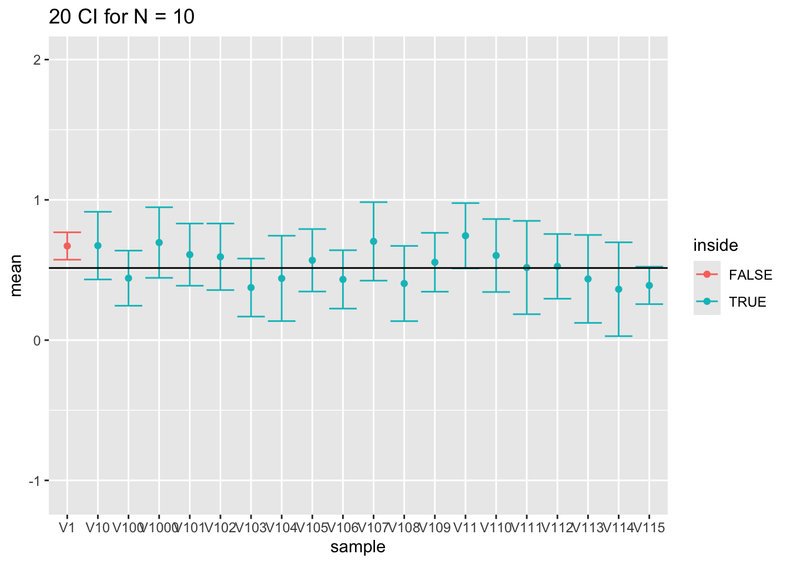
- Voor grote steekproeven (100) is de omvang prima omdat we de standaarddeviatie met een relatief hoge precisie kunnen schatten.
res |>
filter(n == 50) |>
slice(1:20) |>
ggplot(aes(x = sample,y = mean,color = inside)) +
geom_point() +
geom_errorbar(aes(ymin = mean-1.96*se,ymax = mean+1.96*se))+
geom_hline(yintercept = fem$DirectChol |> log2() |> mean()) +
ggtitle("20 CI for N = 50") +
ylim(range(fem$DirectChol |> log2()))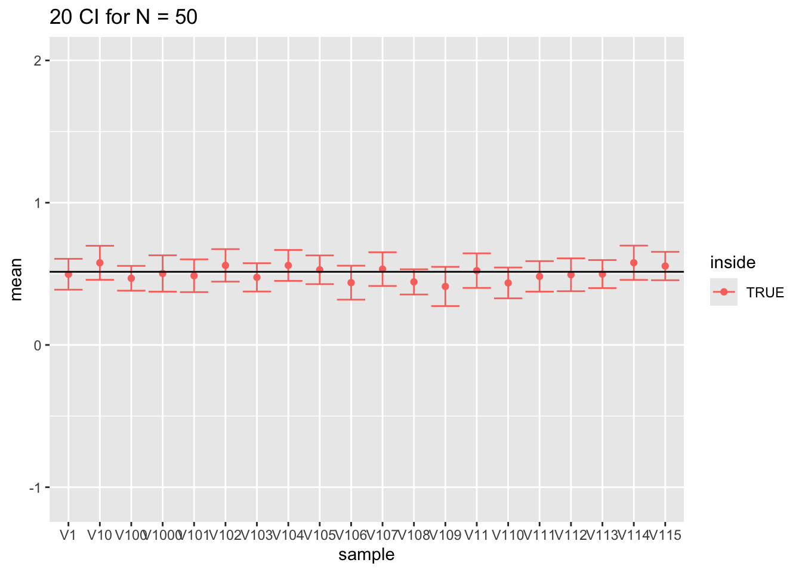
res |>
filter(n == 100) |>
slice(1:20) |>
ggplot(aes(x = sample,y = mean,color = inside)) +
geom_point() +
geom_errorbar(aes(ymin = mean-1.96*se,ymax = mean+1.96*se))+
geom_hline(yintercept = fem$DirectChol |> log2() |> mean()) +
ggtitle("20 CI for N = 100") +
ylim(range(fem$DirectChol |> log2()))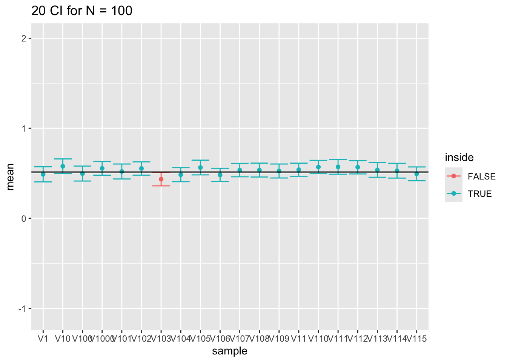
- Wat heb je geobserveerd voor de intervalbreedte?
5.4.1.2 Andere betrouwbaarheidsniveaus
Om een betrouwbaarheidsinterval met een ander betrouwbaarheidsniveau, \((1- \alpha)100\%\) te construeren, vervangt men 1.96 door het relevante kwantiel \(z_{\alpha/2}.\)
De breedte van een \(100\%(1-\alpha)\) betrouwbaarheidsinterval voor een populatiegemiddelde \(\mu\) is \(2 z_{\alpha/2} \ \sigma/\sqrt{n}\). Ze wordt dus bepaald door 3 factoren: de standaarddeviatie op de individuele observaties, \(\sigma\), de grootte van de steekproef, \(n\), en het betrouwbaarheidsniveau, \(1-\alpha\):
\(n\): naarmate de steekproefgrootte toeneemt, krimpt het betrouwbaarheidsinterval. In grote steekproeven beschikken we immers over veel informatie en kunnen we de gezochte populatieparameter bijgevolg relatief nauwkeurig afschatten.
\(\sigma\): naarmate de standaarddeviatie van de oorspronkelijke observaties toeneemt, neemt de lengte van het betrouwbaarheidsinterval toe. Indien er immers veel ruis op de gegevens zit, dan is het moeilijker om populatieparameters of -kenmerken te identificeren.
\(1-\alpha\): naarmate het betrouwbaarheidsniveau toeneemt, wordt het betrouwbaarheidsinterval breder. Indien we immers eisen dat het interval met 99.9% kans de populatiewaarde bevat i.p.v. met 80% kans, dan zullen we duidelijk een breder interval nodig hebben.
Betrouwbaarheidsintervallen worden niet enkel gebruikt voor het populatiegemiddelde, maar kunnen in principe voor om het even welke populatieparameter worden gedefinieerd. Zo kunnen ze bijvoorbeeld gedefinieerd worden voor een verschil tussen 2 gemiddelden, voor een odds ratio, voor een variantie, … De manier om die intervallen te berekenen is vaak complex en sterk afhankelijk van de gebruikte schatter voor de populatieparameter. Er wordt daarom niet van u verwacht dat u voor alle populatieparameters die we in deze cursus ontmoeten, een betrouwbaarheidsinterval kunt berekenen, maar wel dat u het kunt interpreteren.
Definitie 5.4 (Betrouwbaarheidsinterval)
Een \((1-\alpha)100\)% betrouwbaarheidsinterval voor een populatieparameter \(\theta\) is een geschat (en bijgevolg stochastisch) interval dat met \((1-\alpha)100\)% kans de echte waarde van die populatieparameter \(\theta\) bevat.
Einde Definitie
5.4.2 Ongekende variantie op de metingen
Tot nog toe werd verondersteld dat de populatievariantie \(\sigma^2\) gekend is bij het berekenen van een betrouwbaarheidsinterval voor \(\mu\). Betrouwbaarheidsintervallen voor \(\mu\) werden dan opgebouwd door op te merken dat de gestandaardiseerde waarde \((\bar{X} - \mu)/(\sigma/\sqrt{n})\) standaardnormaal verdeeld is en bijgevolg
\[\begin{equation*} \left[\mu - 1.96 \frac{\sigma}{\sqrt{n}},\mu + 1.96 \frac{\sigma}{\sqrt{n}}% \right] \end{equation*}\]
een 95% referentie-interval voor het steekproefgemiddelde voorstelt.
In de praktijk komt het quasi nooit voor dat men de populatievariantie \(\sigma^2\) exact kent. In de praktijk wordt deze geschat als \(S^2\) op basis van de voorhanden zijnde steekproef. Als gevolg hiervan zullen de betrouwbaarheidsintervallen uit voorgaande sectie doorgaans iets te smal zijn (omdat ze er geen rekening mee houden dat ook de variantie werd geschat) en is het noodzakelijk om bij de berekening \((\bar{X} - \mu)/(S/\sqrt{n})\) te gebruiken als gestandaardiseerde waarde i.p.v. \((\bar{X} - \mu)/(\sigma/\sqrt{n})\). Wanneer de steekproef voldoende groot is, ligt de vierkantswortel van variantie \(S^2\) voldoende dicht bij \(\sigma\) zodat \({(\bar{X} - \mu)}/{(S/\sqrt{n}) }\) bij benadering een standaardnormale verdeling volgt en, bijgevolg,
\[ \left[\bar{X} - z_{\alpha/2} \ \frac{S}{\sqrt{n}} , \bar{X} + z_{\alpha/2} \ \frac{S}{\sqrt{n}}\right] \]
een benaderd \((1- \alpha)100\%\) betrouwbaarheidsinterval is voor \(\mu\). Voor kleine steekproeven is dit niet langer het geval. Daardoor introduceert men een extra onnauwkeurigheid in de gestandaardiseerde waarde \({(\bar{X} - \mu)}/{(S/\sqrt{n})}\). Deze is nog wel gecentreerd rond nul en symmetrisch, maar niet langer Normaal verdeeld. De echte verdeling voor eindige steekproefgrootte \(n\) heeft zwaardere staarten dan de Normale. Hoeveel zwaarder de staarten zijn, hangt van de steekproefgrootte \(n\) af. Als \(n\) oneindig groot wordt, komt \(S\) zodanig dicht bij \(\sigma\) te liggen dat de extra onnauwkeurigheid in de gestandaardiseerde waarde verwaarloosbaar is en bijgevolg ook het verschil met de Normale verdeling. Maar voor relatief kleine steekproeven hangt de verdeling van \({(\bar{X} - \mu)}/({S/\sqrt{n}})\) af van de grootte \(n\) van de steekproef. Ze krijgt de naam (Student) \(t\)-verdeling met \(n-1\) vrijheidsgraden (in het Engels: degrees of freedom). Deze verdeling wordt voor een aantal verschillende vrijheidsgraden geïllustreerd in Figuur 5.7. De t-verdelingen in de figuur hebben duidelijk bredere staarten dan de normaalverdeling, waardoor ze ook een grotere percentielwaarden hebben voor een vooropgesteld betrouwbaarheidsniveau. Dat zal leiden tot bredere intervallen, wat logisch is aangezien we de extra onzekerheid inbouwen die gerelateerd is aan het schatten van de standaarddeviatie.
Definitie 5.5 (t-verdeling)
Als \(X_1, X_2, ..., X_n\) een steekproef vormen uit de Normale verdeling \(N(\mu, \sigma^2)\), dan is \((\bar{X} - \mu)/(S/\sqrt{n})\) verdeeld als een \(t\)-verdeling met \(n-1\) vrijheidsgraden.
Einde Definitie
grid <- seq(-5,5,.1)
densDist <- cbind(grid,dnorm(grid), sapply(c(2,5,10),dt,x=grid))
colnames(densDist) <- c("x","normal",paste0("t",c(2,5,10)))
densDist |>
as.data.frame() |>
gather(dist,dens,-x) |>
ggplot(aes(x=x,y=dens,color=dist)) +
geom_line() +
xlab("x") +
ylab("Densiteit")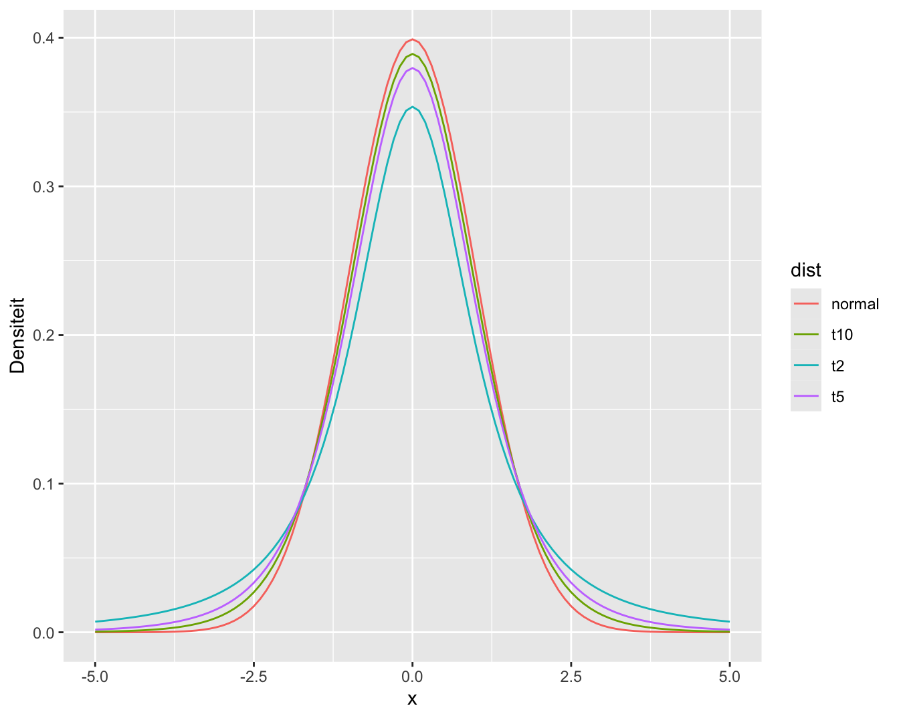
Percentielen van de \(t\)-verdeling kunnen niet met de hand berekend worden, maar kan men voor de verschillende waarden van \(n\) aflezen in Tabellen of berekenen in R. In de onderstaande code wordt het 95%, 97.5%, 99.5% percentiel berekend voor een t-verdeling met 14 vrijheidsgraden, die gebruik kunnen worden voor de berekening van 90%, 95% en 99% betrouwbaarheidsintervallen.
qt(.975,df=14)[1] 2.144787qt(c(.95,.975,.995),df=14)[1] 1.761310 2.144787 2.976843We zien dat het 97.5% percentiel 2.14 voor een t-verdeling met \(n-1=14\) vrijheidsgraden inderdaad groter is dan het kwantiel uit de normaal verdeling 1.96.
Een gelijkaardige logica als voor de Normale verdeling met gekende variantie, geeft dan aan dat een \(100\% (1-\alpha)\) betrouwbaarheidsinterval voor het gemiddelde \(\mu\) van een Normaal verdeelde veranderlijke \(X\) met onbekende variantie kan berekend worden als
\[\begin{equation*} \left[\bar{X} - t_{n-1, \alpha/2} \frac{s}{\sqrt{n}} , \bar{X} + t_{n-1, \alpha/2} \frac{s}{\sqrt{n}}\right] \end{equation*}\]
Deze uitdrukking verschilt van deze in de vorige sectie doordat het \((1-\alpha/2)100\%\) percentiel van de Normale verdeling wordt vervangen door het \((1-\alpha/2)100\%\) percentiel van de t-verdeling met \(n-1\) vrijheidsgraden.
5.4.2.1 Captopril voorbeeld
Voor het captopril voorbeeld kunnen we dus een 95% betrouwbaarheidsinterval bekomen door
mean(delta) - qt(.975,df=14)*sd(delta)/sqrt(n)[1] -23.93258mean(delta) + qt(.975,df=14)*sd(delta)/sqrt(n)[1] -13.93409Een 99% betrouwbaarheidsinterval voor gemiddelde bloeddrukverandering wordt als volgt bekomen:
mean(delta) - qt(.995,df=14)*sd(delta)/sqrt(n)[1] -25.87201mean(delta) + qt(.995,df=14)*sd(delta)/sqrt(n)[1] -11.994665.4.3 Interpretatie van betrouwbaarheidsintervallen
We zullen opnieuw steekproeven trekken van de grote NHANES studie en deze keer BI’s bestuderen voor log2-cholesterol steekproefwaarden. We voeren eerst herhaalde experimenten uit met steekproefgrootte 10.
res$n <- as.character(res$n) |>
as.double(res$n)
res$ll <- res$mean-qt(0.975,df=res$n-1)*res$se
res$ul <- res$mean+qt(0.975,df=res$n-1)*res$se
mu <- fem$DirectChol|>log2()|>mean()
res$inside <- res$ll<=mu & mu<=res$ul
res$n <- as.factor(res$n)
res |>
group_by(n) |>
summarize(coverage=mean(inside)) |>
spread(n,coverage)# A tibble: 1 × 3
`10` `50` `100`
<dbl> <dbl> <dbl>
1 0.949 0.947 0.959We zien dat de omvang van de intervallen nu worden gecontroleerd op hun nominale betrouwbaarheidsniveau van 95%.
res |>
filter(n==10) |>
slice(1:20) |>
ggplot(aes(x=sample,y=mean,color=inside)) +
geom_point() +
geom_errorbar(
aes(ymin=mean-qt(0.975,df=9)*se,
ymax=mean+qt(0.975,df=9)*se))+
geom_hline(yintercept = fem$DirectChol |> log2() |> mean()) +
ggtitle("20 CI for N=10") +
ylim(range(fem$DirectChol |> log2()))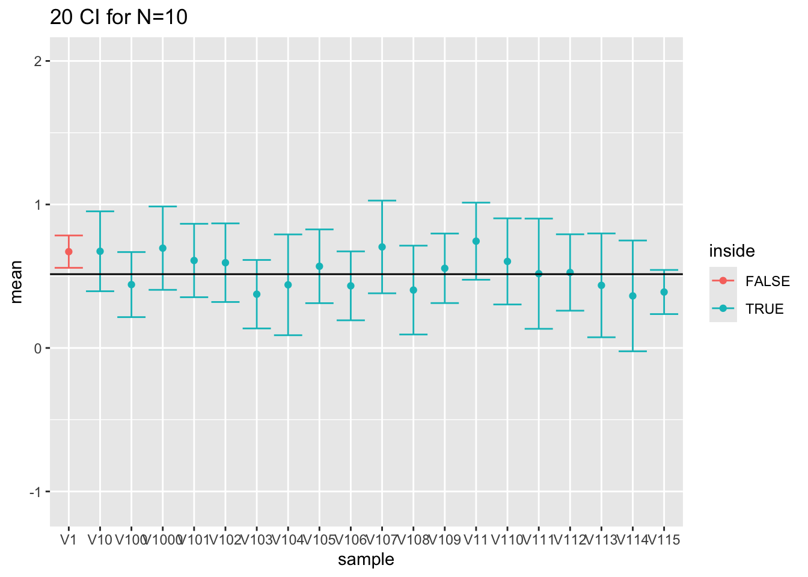
De simulatiestudie toont dus op een empirische wijze aan dat de constructie correct is. Het demonstreert bovendien de interpretatie van probabiliteit via herhaalde steekproefname. In Figuur 5.8 wordt de interpretatie ook grafisch weergegeven voor de eerste 20 gesimuleerde steekproeven. De figuur toont duidelijk aan dat het werkelijke populatiegemiddelde vast is maar ongekend. Het wordt geschat aan de hand van het steekproefgemiddelde dat at random varieert van steekproef tot steekproef rond het werkelijk gemiddelde. We zien ook dat de grenzen van de betrouwbaarheidsintervallen variëren van steekproef tot steekproef. Daarnaast varieert de breedte van de betrouwbaarheidsintervallen eveneens omdat de steekproefstandaarddeviatie eveneens varieert van steekproef tot steekproef7.
In de praktijk zullen we op basis van 1 steekproef besluiten dat het betrouwbaarheidsinterval het populatiegemiddelde bevat en we weten dat dergelijke uitspraken met een kans van \(1-\alpha\) (hier 95%) correct zijn.
Opdracht
Voer de bovenstaande simulatie studie opnieuw uit maar verdubbel de steekproefgrootte. Welke impact heeft dit op de BIs?
5.4.4 Wat rapporteren?
Rapporteer dus zeker steeds de onzekerheid op de resultaten! Conclusies trekken op basis van 1 schatting kan zeer misleidend zijn! In statistische analyses rapporteert men daarom systematisch betrouwbaarheidsintervallen. Betrouwbaarheidsintervallen vormen een goed compromis: ze zijn smal genoeg om informatief te zijn, maar haast nooit zeer misleidend. We besluiten dat de parameter die ons interesseert in het 95% betrouwbaarheidsinterval zit, en weten dat die uitspraak met 95% kans correct is. In de statistiek trekt men dus nooit absolute conclusies.
Op basis van de data-analyse voor het captopril voorbeeld kunnen we dus besluiten dat de gemiddelde bloeddrukdaling 18.9mmHg bedraagt na het toedienen van captopril. Met een 95% betrouwbaarheidsinterval op het gemiddelde van [-23.9,-13.9]mmHg. Op basis van het betrouwbaarheidsinterval is het duidelijk dat het toedienen van captopril resulteert in een sterke bloeddrukdaling bij patiënten met hypertensie.
5.5 Principe van Hypothesetoetsen (via one sample t-test)
We wensen een uitspraak te kunnen doen of er al dan niet een effect is van het toedienen van Captopril op de systolische bloeddruk? Beslissen op basis van gegevens is niet evident. Er is immers onzekerheid of de bevindingen uit de steekproef generaliseerbaar zijn naar de populatie. We stellen ons dus de vraag of het schijnbaar gunstig effect systematisch of toevallig is? Een natuurlijke beslissingsbasis is het gemiddeld verschil \(X\) in de systolische bloeddruk:
\[\bar x=-18.93mmHg (s = 9.03, SE = 2.33)\]
Dat \(\bar{x}< 0\) volstaat niet om te beslissen dat de gemiddelde systolische bloeddruk lager is na het toedienen van captopril op het niveau van de volledige populatie. Om het effect die we in de steekproef observeren te kunnen veralgemenen naar de populatie moet de bloeddrukverlaging voldoende groot zijn. Maar hoe groot moet dit effect nu zijn?
Hiervoor hebben statistici zogenaamde toetsen ontwikkeld om met dit soort vragen om te gaan. Deze leveren een ja/nee antwoord op de vraag of een geobserveerde associatie systematisch is (d.w.z. opgaat voor de studiepopulatie) of als er integendeel onvoldoende informatie in de steekproef voorhanden is om te besluiten dat de geobserveerde associatie ook aanwezig is in de volledige studiepopulatie. Tegenwoordig is het haast onmogelijk om een wetenschappelijk onderzoeksartikel te lezen zonder de resultaten van dergelijke toetsen te ontmoeten. Om die reden wensen we in dit hoofdstuk in te gaan op de betekenis van statistische toetsen en hun nomenclatuur.
We weten dat we volgens het falcificatieprincipe van Popper nooit een hypothese kunnen bewijzen op basis van data (zie Sectie 1.1). Daarom zullen we twee hypotheses introduceren: een nulhypothese en een alternatieve hypothese. We zullen dan later a.d.h.v. de toets de nulhypothese trachten te ontkrachten.
5.5.1 Introductie d.m.v. captopril voorbeeld
We introduceren hypothese testen eerst intuïtief a.d.h.v. het captopril voorbeeld.
Op basis van de steekproef kunnen we niet bewijzen dat er een effect is van het toedienen van captopril (\(H_1\), alternatieve hypothese).
We veronderstellen daarom dat er geen effect is van captopril
We noemen dit de nulhypothese \(H_0\).
Falsify (“probeer te ontkrachten”) de \(H_0\).
Hoe waarschijnlijk is het om een effect waar te nemen dat minstens zo groot is als wat we in de steekproef in een willekeurige steekproef hebben gezien als \(H_0\) waar is?
5.5.1.1 Permutatie test
Onder \(H_0\) zijn de bloeddrukmetingen voor en na toediening van captopril twee “base line” bloeddrukmetingen voor een patiënt
Onder \(H_0\) kunnen we de bloeddrukmetingen voor iedere patiënt in willekeurige volgorde plaatsen (permuteren).
set.seed(35)
captoprilSamp <- captopril
perm <- sample(c(FALSE, TRUE), 15, replace = TRUE)
captoprilSamp$SBPa[perm] <- captopril$SBPb[perm]
captoprilSamp$SBPb[perm] <- captopril$SBPa[perm]
captoprilSamp$deltaSBP <- captoprilSamp$SBPa-captoprilSamp$SBPb
captoprilSamp |>
gather(type, bp, -id) |>
filter(type %in% c("SBPa","SBPb")) |>
mutate(type = factor(type, levels = c("SBPb", "SBPa")))|>
ggplot(aes(x = type,y = bp)) +
geom_line(aes(group = id)) +
geom_point()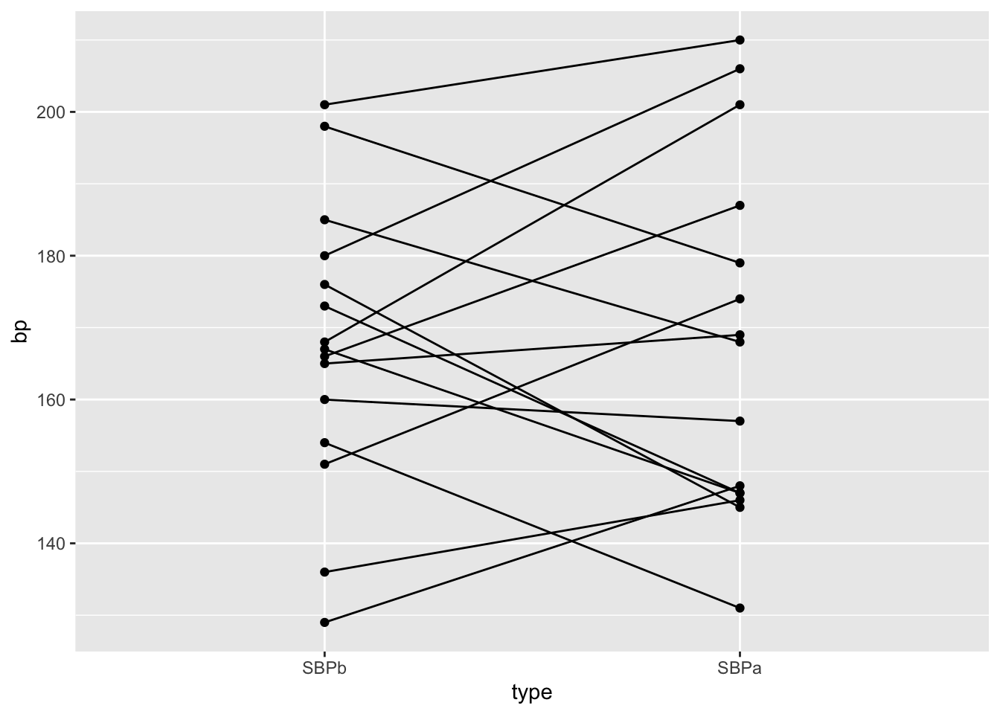
data.frame(
deltaSBP = c(captopril$deltaSBP,captoprilSamp$deltaSBP),
shuffled=rep(c(FALSE,TRUE),each=15)
) |>
ggplot(aes(x = shuffled, y = deltaSBP)) +
geom_boxplot(outlier.shape = NA) +
geom_point(position = "jitter")+
stat_summary(
fun.y = mean,
geom = "point",
shape = 19,
size = 3,
color = "red",
fill = "red") +
ylab("Difference (mm mercury)")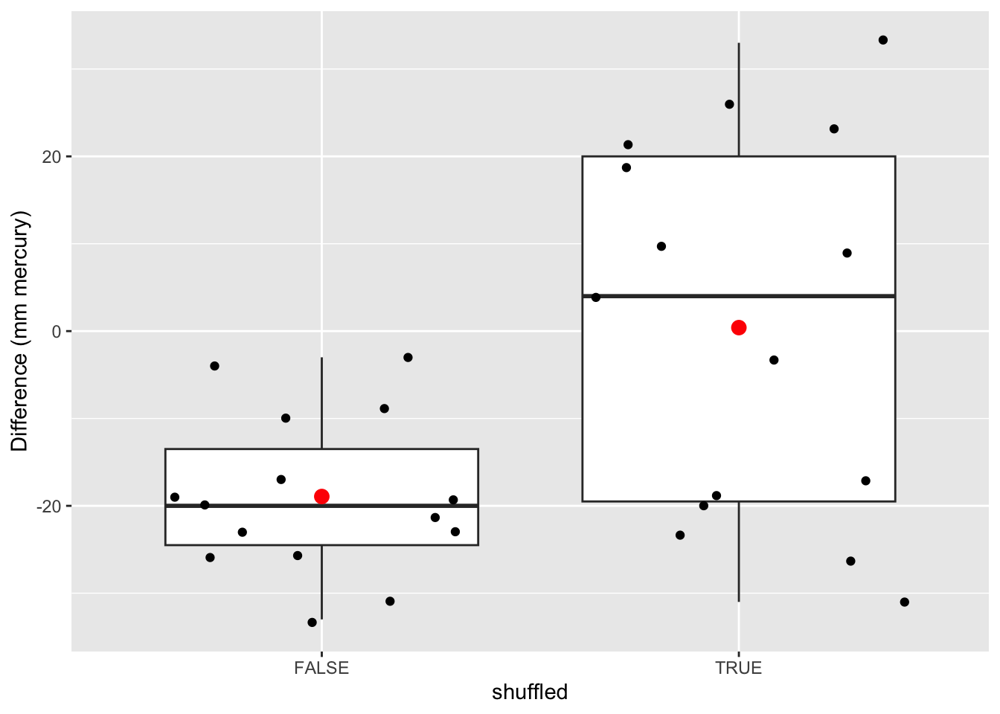
We permuteren opnieuw
captoprilSamp <- captopril
perm <- sample(c(FALSE,TRUE), 15, replace = TRUE)
captoprilSamp$SBPa[perm] <- captopril$SBPb[perm]
captoprilSamp$SBPb[perm] <- captopril$SBPa[perm]
captoprilSamp$deltaSBP <- captoprilSamp$SBPa-captoprilSamp$SBPb
captoprilSamp |>
gather(type, bp, -id) |>
filter(type %in% c("SBPa","SBPb")) |>
mutate(type = factor(type, levels = c("SBPb", "SBPa")))|>
ggplot(aes(x = type,y = bp)) +
geom_line(aes(group = id)) +
geom_point()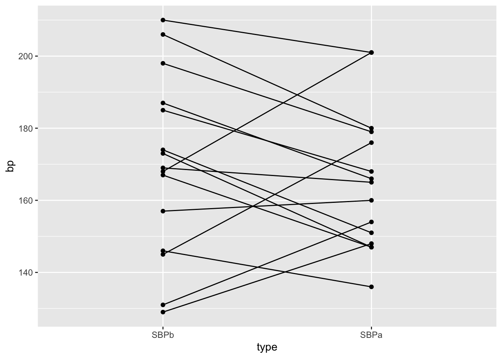
data.frame(
deltaSBP = c(captopril$deltaSBP,captoprilSamp$deltaSBP),
shuffled=rep(c(FALSE,TRUE),each=15)
) |>
ggplot(aes(x = shuffled, y = deltaSBP)) +
geom_boxplot(outlier.shape = NA) +
geom_point(position = "jitter")+
stat_summary(
fun.y = mean,
geom = "point",
shape = 19,
size = 3,
color = "red",
fill = "red") +
ylab("Difference (mm mercury)")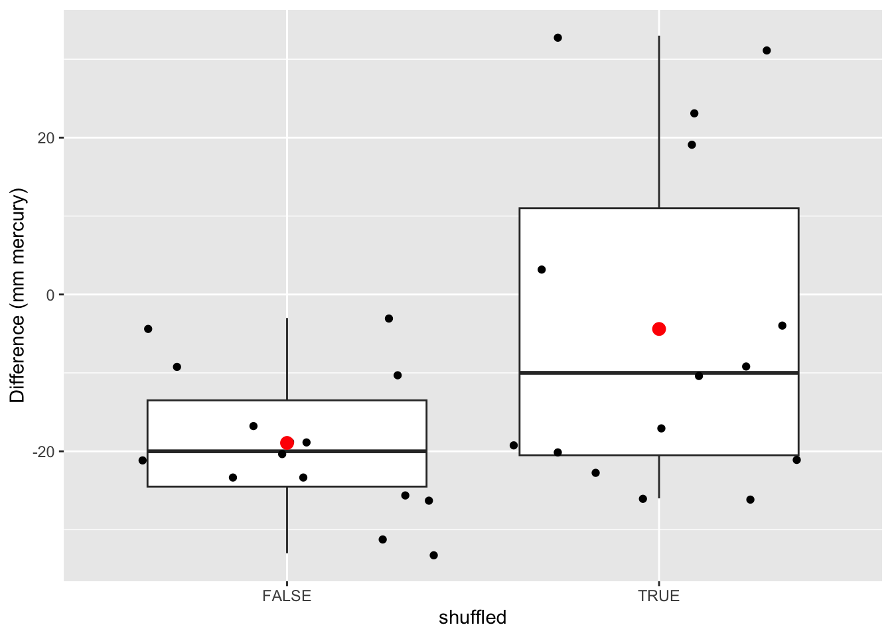
- Er zijn \(2^{15}\) = 32768 mogelijke permutaties!
- We hoeven in principe alleen de tekens van de waargenomen bloeddrukverschillen \(x\) te wisselen als we permuteren.
permH <- expand.grid(
replicate(
15,
c(-1,1),
simplify=FALSE)
) |>
t()
permH[,1:5] [,1] [,2] [,3] [,4] [,5]
Var1 -1 1 -1 1 -1
Var2 -1 -1 1 1 -1
Var3 -1 -1 -1 -1 1
Var4 -1 -1 -1 -1 -1
Var5 -1 -1 -1 -1 -1
Var6 -1 -1 -1 -1 -1
Var7 -1 -1 -1 -1 -1
Var8 -1 -1 -1 -1 -1
Var9 -1 -1 -1 -1 -1
Var10 -1 -1 -1 -1 -1
Var11 -1 -1 -1 -1 -1
Var12 -1 -1 -1 -1 -1
Var13 -1 -1 -1 -1 -1
Var14 -1 -1 -1 -1 -1
Var15 -1 -1 -1 -1 -1- We zullen dit voor alle mogelijke permutaties doen en we zullen het gemiddelde bijhouden.
#calculate the means for the permuted data
muPerm <- colMeans(permH*captopril$deltaSBP)
data.frame(permMean = muPerm) |>
ggplot(aes(x=permMean)) +
geom_histogram() +
geom_vline(
xintercept = mean(captopril$deltaSBP),
col = "blue")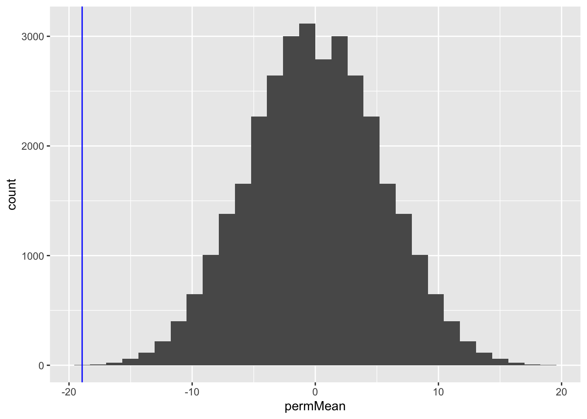
sum(muPerm <= mean(captopril$deltaSBP))[1] 1mean(muPerm <= mean(captopril$deltaSBP))[1] 3.051758e-05We zien dat maar 1 van de gemiddelden die werden verkregen onder \(H_0\) (door permutatie) zo extreem was als het steekproefgemiddelde dat we in de captopril-studie hebben waargenomen.
Dus de kans om een bloeddrukdaling waar te nemen die groter of gelijk is dan die in de captopril-studie in een willekeurige steekproef onder de nulhypothese, is 1 op de 32768.
We hebben dus sterk bewijs dat \(H_0\) onjuist is en daarom verwerpen we \(H_0\) en concluderen \(H_1\): het toedienen van captopril heeft een effect op de bloeddruk van patiënten met hypertensie.
5.5.1.2 Pivot
In de praktijk gebruiken we altijd statistieken die de effectgrootte (gemiddeld verschil) afwegen tegen ruis (standaard error)
Als we de nulhypothese ontkrachten, standaardiseren we het gemiddelde rond \(\mu_0 = 0\) het gemiddelde onder \(H_0\)
\[t=\frac{\bar X-\mu_0}{se_{\bar X}}\]
- Voor het Captopril voorbeeld wordt dit: \[\frac{-18.93-0}{2.33}=-8.12\]
We bepalen nu de nulverdeling van teststatistiek t met permutatie.
deltaPerms <- permH*captopril$deltaSBP
tPerm <- colMeans(deltaPerms)/(apply(deltaPerms,2,sd)/sqrt(15))
tOrig <- mean(captopril$deltaSBP)/sd(captopril$deltaSBP)*sqrt(15)
tPermPlot <- data.frame(permT = tPerm) |>
ggplot(aes(x=permT)) +
geom_histogram(aes(y = ..density.., fill = ..count..)) +
geom_vline(xintercept = tOrig,col = "blue")
tPermPlot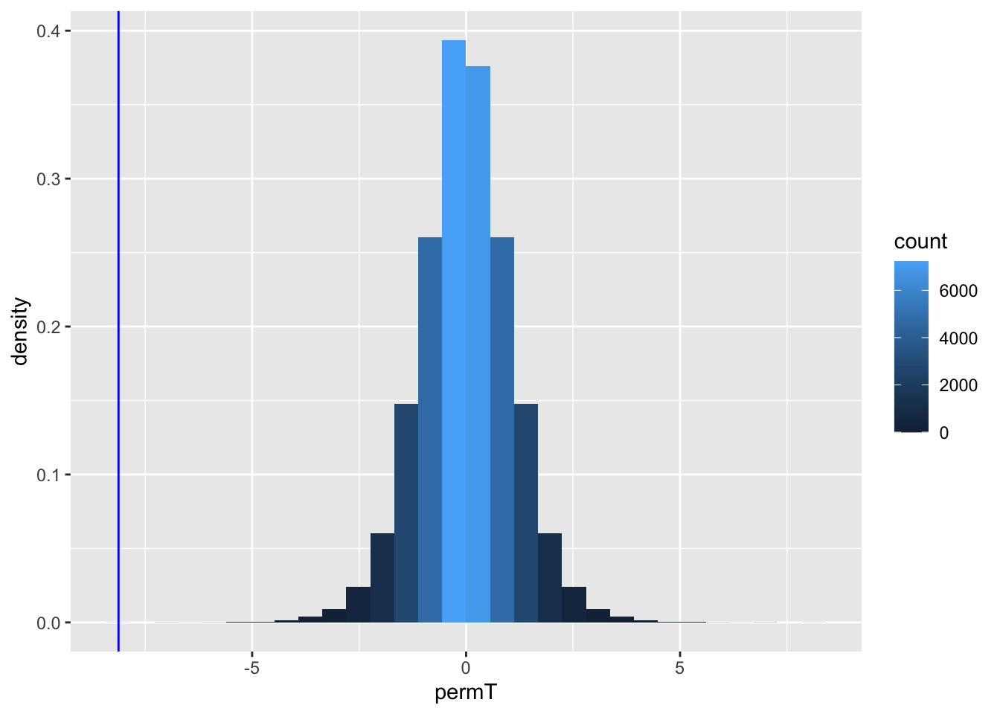
- Opnieuw heeft slechts 1 van de permutaties een t-statistiek die zo extreem is als de statistiek die wordt waargenomen in de captopril-studie.
Wanneer er geen effect is van captopril, is het bijna onmogelijk om een teststatistiek te verkrijgen die zo extreem is als degene die werd waargenomen in de steekproef (t=-8.12).
De kans om een grotere bloeddrukdaling waar te nemen dan degene die we in onze steekproef hebben waargenomen in een willekeurige steekproef onder \(H_0\) is 1/32768.
We noemen deze kans de p-waarde.
Het meet de sterkte van het bewijs tegen de nulwaarde: hoe kleiner de p-waarde, hoe meer bewijs we hebben dat de nulwaarde niet waar is.
De verdeling heeft een mooie klokvorm.
5.5.1.3 Hoe beslissen we?
Wanneer is de p-waarde klein genoeg om te concluderen dat er sterk bewijs is tegen de nulhypothese?
We werken doorgaans met een significantieniveau van \(\alpha = 0,05\)
We stellen dat we de test hebben uitgevoerd op het significantieniveau van 5%
5.5.1.4 Permutatietests zijn computationeel veeleisend
Kunnen we beoordelen hoe extreem de bloeddrukdaling was zonder permutatie?
We weten dat de bloeddrukverschillen ongeveer normaal verdeeld zijn, dus
\[t=\frac{\bar X - \mu}{se_{\bar X}}\]
volgt een t-verdeling (met 14 vrijheidsgraden voor het Captopril voorbeeld).
Onder \(H_0\) \(\mu=0\) en
\[t=\frac{\bar X-0}{se_{\bar X}}\sim f_{T,14}\]
tPermPlot +
stat_function(
fun = dt,
color = "red",
args = list(df=14))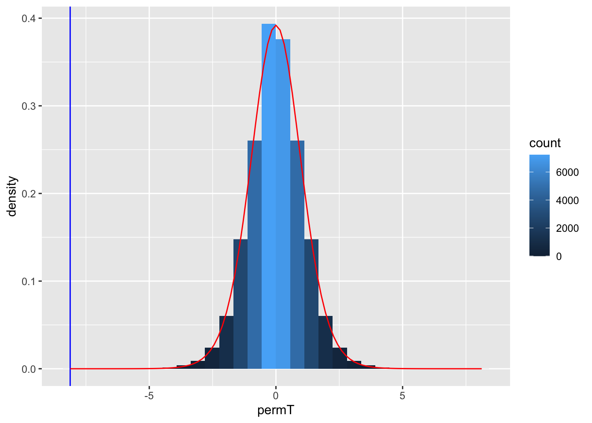
Merk op dat de permutatie-nulverdeling inderdaad overeenkomt met een t-verdeling met 14 vrijheidsgraden.
Zodat we de statistische test kunnen uitvoeren met behulp van statistische modellen van de gegevens.
Hiervoor moeten we assumpties maken, die we verifiëren in de data exploratie.
We overlopen nu alle componenten van een hypothese test waarbij we gebruik maken van veronderstellingen over de distributie van de gegevens.
5.5.2 Hypotheses
Algemeen starten we met het vertalen van de wetenschappelijke vraagstelling naar een nulhypothese (\(H_0\)) en een alternatieve hypothese (\(H_1\)). Dit kan pas nadat de probleemstelling vertaald is naar een geparametriseerd statistisch model. Uit de beschrijving van de proefopzet volgt dat \(X_1,...,X_n\) i.i.d.8 \(f(X)\) met \(f(X)\) de dichtheidsfunctie van de bloeddrukverschillen.
Vereenvoudiging: veronderstel dat \(f(X)\) gekend is op een eindig-dimensionale set van parameters \(\mathbf{\theta}\) na (parametrisch statistisch model). Voor het captopril voorbeeld veronderstellen we dat \(f(X)\) een normale distributie \(N(\mu,\sigma^2)\) volgt met parameters \(\mathbf{\theta}=(\mu,\sigma^2)\), het gemiddelde \(\mu\) en variantie \(\sigma^2\).
De vraagstelling is geformuleerd in termen van de gemiddelde bloeddrukdaling: \(\mu=E_f[X]\).
De alternatieve hypothese wordt geformuleerd in termen van een parameter van \(f(X)\) en dient uit te drukken wat de onderzoekers wensen te bewijzen aan de hand van de studie. Hier:
\[H_1: \mu<0.\]
Gemiddeld gezien daalt de bloeddruk bij patiënten met hypertensie na toediening van captopril.
De nulhypothese is meestal een uitdrukking van de nultoestand, i.e. de omstandigheden waarin niets bijzonders aan de hand is. De onderzoekers wensen meestal te bewijzen via empirisch onderzoek dat de nulhypothese niet waar is: Falsificatie principe. De nulhypothese wordt veelal uitgedrukt door gebruik te maken van dezelfde parameter als deze die in \(H_1\) gebruikt is. Hier:
\[H_0 : \mu=0\]
m.a.w. gemiddeld gezien blijft de systolische bloeddruk na toediening van captopril onveranderd.
5.5.3 Test-statistiek
Eens de populatie, de parameters en de nulhypothese en alternatieve hypothese bepaald zijn, kan de basisgedachte van een hypothesetest als volgt bondig beschreven worden.
Construeer een teststatistiek zodanig dat deze
- de evidentie meet die aanwezig is in de steekproef,
- tegen de gestelde nulhypothese,
- ten voordele van de alternatieve hypothese.
Een teststatistiek is dus noodzakelijk een functie van de steekproefobservaties.
Voor het captopril voorbeeld drukt de statistiek
\[T=\bar X - \mu_0\]
uit hoever het steekproefgemiddelde van de bloeddrukdaling ligt van het gemiddelde \(\mu_0=0\) in de populatie onder de nulhypothese9.
- Als \(H_0\) waar is en er dus geen effect is van captopril in de populatie, dan verwachten we dat de teststatistiek T dicht ligt bij \(T=0\)
- Als \(H_1\) waar is, dan verwachten we dat \(T<0\).
In de praktijk gebruiken we echter meestal teststatistieken die niet alleen de grootte van het effect in rekening brengen maar ook de onzekerheid op het effect. We doen dit door de effectgrootte te balanceren t.o.v. de standard error.
\[T=\frac{\bar{X}-0}{\text{SE}_{\bar X}}\]
Waarbij \(\mu_0=0\) voor het captopril voorbeeld.
Opnieuw geldt dat
- Als \(H_0\) waar is en er dus geen effect is van captopril in de populatie, dan verwachten we dat de teststatistiek T dicht ligt bij \(T=0\)
- Als \(H_1\) waar is, dan verwachten we dat \(T<0\).
- Voor het captopril voorbeeld vinden we \(t=(-18.93-0)/2.33=-8.12\).
- Is \(t = -8.12\) groot genoeg in absolute waarde om te kunnen besluiten dat \(\mu < 0\) en met welke zekerheid kunnen we dit besluiten?
Om daar een uitspraak over te doen zullen we de teststatistiek T verder bestuderen. T is een toevalsveranderlijke en de verdeling van T hangt af van de verdeling van de steekproefobservaties, maar die verdeling is ongekend! We hebben normaliteit verondersteld, maar dit laat nog steeds het gemiddelde en de variantie onbepaald. Bovendien wordt de hypothesetest net geconstrueerd om een uitspraak te kunnen doen over het gemiddelde \(\mu\)! De oplossing zit in de nulhypothese die we kunnen veronderstellen als er geen effect is van captopril. De \(H_0\) stelt dat \(\mu=0\). Als we aannemen dat \(H_0\) waar is, dan is het gemiddelde van de normale distributie gekend! Als de bloeddrukverschillen \(X_1, \ldots X_{15}\) onafhankelijk en identiek normaal verdeeld (i.i.d.) zijn, dan weten we dat
\[\bar X \stackrel{H_0}{\sim} N(0, \sigma^2/n)\]
Gezien we \(\sigma^2\) niet kennen kunnen we deze vervangen door de steekproef variantie. Dan weten we dat
\[T=\frac{\bar{X}-0}{\text{SE}_{\bar X}}\stackrel{H_0}{\sim} t(n-1) \]
een t-verdeling volgt met n-1 vrijheidsgraden onder de nulhypothese. We weten dat indien de alternatieve hypothese waar zou zijn, we mogen verwachten dat er meer kans is op het observeren van een kleine waarde voor de teststatistiek dan wat verwacht wordt onder de nulhypothese. We zullen de verdeling van de teststatistiek onder de nulhypothese gebruiken om na te gaan of de geobserveerde test-statistiek \(t = -8.12\) klein genoeg is om te kunnen besluiten dat \(\mu < 0\).
- Is de geobserveerde teststatistiekwaarde (\(t=-8.12\)) een waarde die we verwachten als \(H_0\) waar is, of is het een waarde die onwaarschijnlijk klein is als \(H_0\) waar is?
- In het laatste geval deduceren we dat we niet langer kunnen aannemen dat \(H_0\) waar is, en dienen we dus \(H_1\) te concluderen.
- De vraag blijft: (a) hoe groot moet de geobserveerde teststatistiek \(t\) zijn opdat we \(H_0\) verwerpen zodat (b) we bereid zijn om \(H_1\) te besluiten en (c) hoe zeker zijn we van deze beslissing?
- Het antwoord hangt samen met de interpretatie van de kansen die berekend kunnen worden op basis van de nuldistributie10 en de geobserveerde teststatistiek \(t\).
5.5.4 De p-waarde
De kans waarop de keuze tussen \(H_0\) en \(H_1\) gebaseerd wordt, wordt de \(p\)-waarde genoemd. De berekeningswijze is context-afhankelijk, maar voor het huidige voorbeeld wordt de \(p\)-waarde gegeven door
\[ p = P\left[T \leq t \mid H_0\right] = \text{P}_0\left[T\leq t\right], \]
waar de index “0” in \(\text{P}_0\left[.\right]\) aangeeft dat de kans onder de nulhypothese berekend wordt. Het is met andere woorden de kans om in een willekeurige steekproef onder de nulhypothese een waarde voor de teststatistiek T te bekomen die lager of gelijk is aan11 de waarde die in de huidige steekproef werd geobserveerd.
De \(p\)-waarde voor het captopril voorbeeld wordt berekend als
\[p= \text{P}_0\left[T\leq -8.12\right]=F_t(-8.12;14) = 0.6\ 10^{-6}.\]
waarbij \(F_t(;14)\) de cumulatieve distributie functie is van een t-verdeling met 14 vrijheidsgraden,
\[F_t(x;14)=\int\limits_{-\infty}^{x} f_t(x;14).\]
Waarbij \(f_t(.;14)\) de densiteitsfunctie is van de t-verdeling. De oppervlakte onder de densiteitsfunctie is opnieuw een kans. Deze kans kan berekend worden in R m.b.v. de functie pt(x,df) die twee argumenten heeft, de waarde van de test-statistiek x en het aantal vrijheidsgraden van de t-verdeling df. pt(x,df) berekent de kans om een waarde te observeren die kleiner of gelijk is aan x wanneer men een willekeurige observatie trekt uit een t-verdeling met df vrijheidsgraden.
n <- length(delta)
stat<-(mean(delta)-0)/(sd(delta)/sqrt(n))
stat[1] -8.122816pt(stat,n-1)[1] 5.731936e-07Definitie 5.6 (\(p\)-waarde)
De p-waarde (ook wel geobserveerd significantieniveau genoemd) is de kans om onder de nulhypothese een even of meer “extreme” toetsinggrootheid waar te nemen (in de richting van het alternatief) dan de waarde \(t\) die geobserveerd werd o.b.v. de steekproef. Hoe kleiner die kans is, hoe sterker het bewijs tegen de nulhypothese.
Merk op dat de p-waarde de kans niet uitdrukt dat de nulhypothese waar is!12.
Einde Definitie
Het woord “extreem” duidt op de richting waarvoor de teststatistiek onder de alternatieve hypothese meer waarschijnlijk is. In het voorbeeld is \(H_1: \mu < 0\) en verwachten we dus kleinere waarden van \(t\) onder \(H_1\). Vandaar de kans op \(T\leq t\). Uit de definitie van de \(p\)-waarde volgt dat een kleine \(p\)-waarde betekent dat de geobserveerde teststatistiek eerder onwaarschijnlijk is als aangenomen wordt dat \(H_0\) correct is. Dus een voldoende kleine \(p\)-waarde noopt ons tot het verwerpen van \(H_0\) ten voordele van \(H_1\). De drempelwaarde waarmee de \(p\)-waarde vergeleken wordt, wordt het significantieniveau genoemd en wordt voorgesteld door \(\alpha\).
Definitie 5.7 (significantieniveau)
De drempelwaarde \(\alpha\) staat gekend als het significantieniveau van de statistische test. Een statistische test uitgevoerd op het \(\alpha\) significantieniveau wordt een niveau-\(\alpha\) test genoemd (Engels: level-\(\alpha\) test).
Einde definitie
Een toetsingsresultaat wordt statistisch significant genoemd wanneer de bijhorende p-waarde kleiner is dan \(\alpha\), waarbij \(\alpha\) meestal gelijk aan 5% wordt genomen. Hoe kleiner de p-waarde hoe meer `significant’ het testresultaat afwijkt van de verwachting onder de nulhypothese. Het aangeven van een p-waarde voor een toets geeft bijgevolg meer informatie over het resultaat dan een eenvoudig ja/nee antwoord of de nulhypothese wordt verworpen op een vast gekozen \(\alpha\)-niveau. Het geeft immers niet alleen aan of de nulhypothese verworpen wordt op een gegeven significantieniveau, maar ook op welke significantieniveaus de nulhypothese verworpen wordt.
Ze vat dus de bewijskracht tegen de nulhypothese samen
\[\begin{array}{cl}>0.10 & \text{ niet significant (zwak bewijs)}\\0.05-0.10 & \text{ marginaal significant, suggestief}\\0.01-0.05 & \text{ significant}\\0.001-0.01 & \text{ sterk significant}\\<0.001 & \text{ extreem significant}\end{array}\]
5.5.5 Kritieke waarde
Een alternatieve wijze voor de formulering van de beslissingsregel kan worden bekomen door gebruik te maken van een kritieke waarde. In plaats van \(p\)-waarden, kan de beslissingsregel geschreven worden in termen van de teststatistiek. Bij gebruik van \(p\)-waarden bepaalt \(p=\alpha\) de grens. Een \(p\)-waarde van \(\alpha\) schrijven we als
\[p=\text{P}_0 \left[ T \leq t \right]=\alpha.\]
Dat is exact de definitie van het het \(\alpha\)-percentiel van de distributie van \(T\). In het voorbeeld is de nuldistributie \(t_{n-1}\). Dus,
\[\text{P}_0\left[T\leq -t_{n-1;\alpha}\right]=\alpha.\]
De beslissingsregel mag dus ook geschreven worden als
\[\begin{eqnarray*} \text{als } & t< -t_{n-1;\alpha} & \text{ dan verwerp }H_0\text{ en besluit }H_1 \\ \text{als } & t\geq -t_{n-1;\alpha} & \text{ dan aanvaard }H_0. \end{eqnarray*}\]
Het percentiel \(t_{n-1;\alpha}\) dat de drempelwaarde vormt in de beslissingsregel wordt in deze context de kritieke waarde op het \(5\%\) significantieniveau genoemd. De beslissingsregel waarbij de geobserveerde \(t\) vergeleken wordt met een kritieke waarde is minder algemeen geformuleerd dan deze gebruik makend van de \(p\)-waarde omdat het expliciet gebruik maakt van de nuldistributie die van teststatistiek tot teststatistiek, of zelfs van dataset tot dataset kan variëren.
De begrippen p-waarde, kritieke waarde, significantie-niveau, verwerpings- en aanvaardingsregio worden weergegeven in Figuur 5.9.
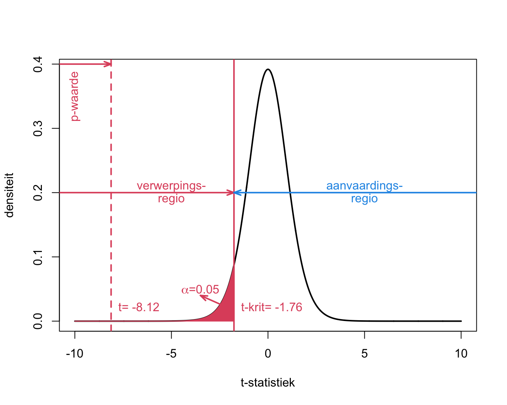
5.5.6 Beslissingsfouten
Aangezien de beslissing over het al dan niet verwerpen van de nulhypothese bepaald wordt door slechts een steekproef te observeren, kunnen volgende beslissing genomen worden:
| Besluit | H0 | H1 |
|---|---|---|
| Aanvaard H0 | OK | Type II (β) |
| Verwerp H0 | Type I (α) | OK |
Het schema geeft de vier mogelijke situaties:
\(H_0\) is in werkelijkheid waar, en dit wordt ook besloten aan de hand van de statistische test (dus geen beslissingsfout)
\(H_1\) is in werkelijkheid waar, en dit wordt ook besloten aan de hand van de statistische test (dus geen beslissingsfout)
\(H_0\) is in werkelijkheid waar, maar aan de hand van de statistische test wordt besloten om \(H_0\) te verwerpen en \(H_1\) te concluderen. Dus \(H_1\) wordt foutief besloten. Dit is een zogenaamde type I fout.
\(H_1\) is in werkelijkheid waar, maar aan de hand van de statistische test wordt besloten om \(H_0\) te aanvaarden. Dit is een zogenaamde type II fout. Dus \(H_0\) wordt foutief aanvaard.
De beslissing is gebaseerd op een teststatistiek \(T\) die een toevalsveranderlijke is. De beslissing is dus ook stochastisch en aan de vier mogelijke situaties uit bovenstaand schema kunnen dus probabiliteiten toegekend worden. Net zoals voor het afleiden van de steekproefdistributie van de teststatistiek, moeten we de distributie van de steekproefobservaties kennen alvorens het stochastisch gedrag van de beslissingen te kunnen beschrijven. Indien we aannemen dat \(H_0\) waar is, dan is de distributie van \(T\) gekend en kunnen ook de kansen op de beslissingen bepaald worden voor de eerste kolom van de tabel.
5.5.6.1 Type I fout
We starten met de kans op een type I fout (hier uitgewerkt voor het captopril voor beeld):
\[\text{P}\left[\text{type I fout}\right]=\text{P}\left[\text{verwerp }H_0 \mid H_0\right] = \text{P}_0\left[T<t_{n-1;1-\alpha}\right]=\alpha.\]
Dit geeft ons meteen een interpretatie van het significantieniveau \(\alpha\): het is de kans op het maken van een type I fout. De constructie van de statistische test garandeert dus dat de kans op het maken van een type I fout gecontroleerd wordt op het significantieniveau \(\alpha\). De kans op het correct aanvaarden van \(H_0\) is dus \(1-\alpha\). Verder kan aangetoond worden dat de p-waarde onder \(H_0\) uniform verdeeld is. Het leidt dus tot een uniforme beslissingsstrategie.
We illustreren dit in een simulatiestudie
- n=15
- \(\mu=0\) mmHg, er is dus geen effect van de behandeling
- \(\sigma =9\) mmHg
- 1000 gesimuleerde steekproeven
nsim <- 10000
n <- 15
sigma <- 9
mu <- 0
mu0 <- 0
alpha <- 0.05
#simulate nsim samples of size n
deltaSim <- matrix(
rnorm(n*nsim,mu,sigma),
nrow=n,
ncol=nsim)
pSim <- apply(
deltaSim,
2,
function(x, mu, alternative)
t.test(x,
mu = mu,
alternative = alternative)$p.value,
mu = mu0,
alternative="less"
)
mean(pSim<alpha)[1] 0.0513data.frame(pValue = pSim) |>
ggplot(aes(x=pValue)) +
geom_histogram() +
xlim(0,1)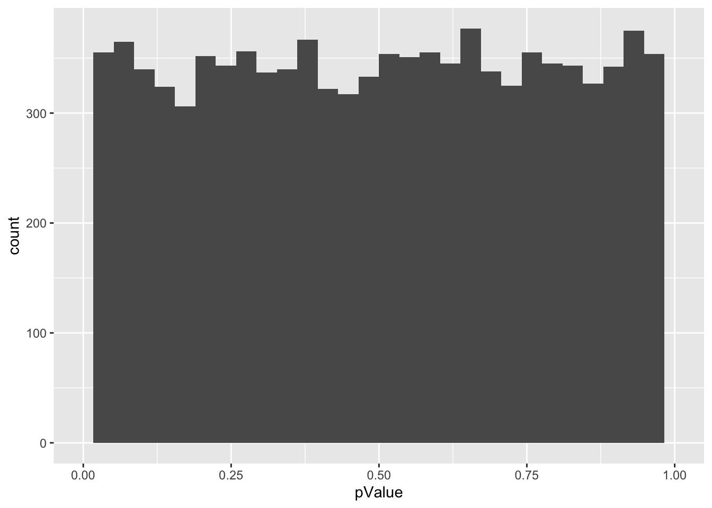
- De type I-fout is inderdaad ongeveer 0,05
- De p-waarden zijn uniform
Opdracht:
Voer de simulatiestudie opnieuw uit verdubbel hierbij het aantal observaties in de steekproef. Wat observeer je?
5.5.6.2 Type II fout
Het bepalen van de kans op een type II fout is minder evident omdat de alternatieve hypothese minder éénduidig is als de nulhypothese. In het captopril voorbeeld is \(H_1: \mu<0\); met deze informatie wordt de distributie van de steekproefobservaties niet volledig gespecifieerd en dus ook niet de distributie van de teststatistiek. Dit impliceert dat we eigenlijk de kans op een type II fout niet kunnen berekenen. De klassieke work-around bestaat erin om één specifieke distributie te kiezen die voldoet aan \(H_1\).
\[H_1(\delta): \mu=0-\delta \text{ voor een }\delta>0.\]
De parameter \(\delta\) kwantificeert de afwijking van de nulhypothese.
De kracht van een test (Engels: power) is een kans die meer frequent gebruikt wordt dan de kans op een type II fout \(\beta\). De kracht wordt gedefinieerd als
\[\pi(\delta) = 1-\beta(\delta) = \text{P}_\delta\left[T>t_{n-1;1-\alpha}\right]=\text{P}_\delta\left[P<\alpha\right].\]
De kracht van een niveau-\(\alpha\) test voor het detecteren van een afwijking \(\delta\) van het gemiddelde onder de nulhypothese \(\mu_0=0\) is dus de kans dat de niveau-\(\alpha\) test dit detecteert wanneer de afwijking in werkelijkheid \(\delta\) is.
Merk op dat \(\pi(0)=\alpha\) en de kracht van een test toeneemt als de afwijking van de nulhypothese toeneemt.
De kracht van de test (d.i. de kans om Type II fouten te vermijden) wordt typisch niet gecontroleerd, tenzij d.m.v. studiedesign en steekproefgrootte.
Interpretatie
Stel dat we voor een gegeven dataset bekomen dat \(p<\alpha\), m.a.w. \(H_0\) wordt verworpen. Volgens het schema van de beslissingsfouten zijn er dan slechts twee mogelijkheden (zie onderste rij van schema): ofwel is de beslissing correct, ofwel hebben we een type I fout gemaakt. Over de type I fout weten we echter dat ze slechts voorkomt met een kleine kans. Anderzijds, indien \(p\geq \alpha\) en we \(H_0\) niet verwerpen, dan zijn er ook twee mogelijkheden: ofwel is de beslissing correct, ofwel hebben we een type II fout gemaakt. De kans op een type II fout (\(\beta\)) is echter niet gecontroleerd op een gespecifieerde waarde. De statistische test is zodanig geconstrueerd dat ze enkel de kans op een type I fout controleert (op \(\alpha\)). Om wetenschappelijk eerlijk te zijn, moeten we een pessimistische houding aannemen en er rekening mee houden dat \(\beta\) groot zou kunnen zijn (i.e. een kleine kracht).
Bij \(p < \alpha\) wordt de nulhypothese verworpen en we mogen hieruit concluderen dat \(H_1\) waarschijnlijk juist is. Dit noemen we een sterke conclusie. Bij \(p\geq \alpha\) wordt de nulhypothese aanvaard, maar dat impliceert niet dat we concluderen dat \(H_0\) juist is. We kunnen enkel besluiten dat de data onvoldoende bewijskracht tegen \(H_0\) ten gunste van \(H_1\) bevatten. Dit noemen we een daarom zwakke conclusie.
We illustreren dit opnieuw in een simulatiestudie:
- n=15
- \(\mu=-2\) mmHg, er is dus een bloeddrukdaling van 2 mmHg door de behandeling.
- \(\sigma =9\) mmHg
- 1000 gesimuleerde steekproeven
nsim <- 10000
n <- 15
sigma <- 9
mu <- -2
mu0 <- 0
alpha <- 0.05
#simulate nsim samples of size n
deltaSim <- matrix(
rnorm(n*nsim, mu, sigma),
nrow=n,
ncol=nsim)
pSim <- apply(
deltaSim,
2,
function(x,mu,alternative)
t.test(x,
mu = mu,
alternative = alternative)$p.value,
mu = mu0,
alternative = "less"
)
mean(pSim<alpha)[1] 0.2055data.frame(pValue = pSim) |>
ggplot(aes(x=pValue)) +
geom_histogram() +
xlim(0,1)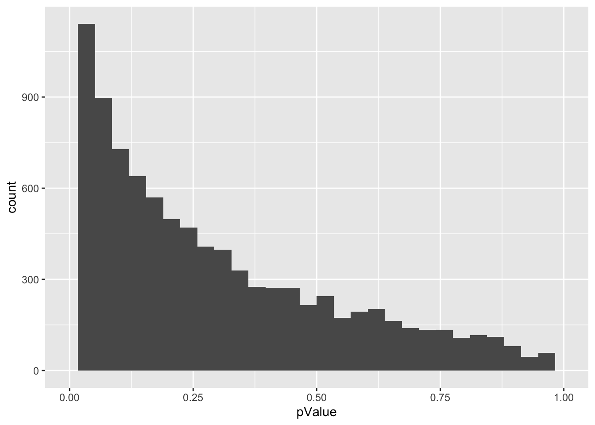
- We observeren dat een power van 0.2055 of een type II error van 0.7945.
Opdracht:
Voer de simulatiestudie opnieuw uit verdubbel hierbij het aantal observaties in de steekproef. Wat observeer je?
5.5.7 Conclusies Captopril voorbeeld.
De test die we hebben uitgevoerd is in de literatuur ook bekend als de one sample t-test op het verschil of als een gepaarde t-test, we beschikken immers over gepaarde gegevens per patiënt. De test is eenzijdig uitgevoerd. We testen tegen het alternatief dat er een bloeddrukdaling is.
Beide testen (one sample t-test op het verschil en de gepaarde t-test) geven ons inderdaad dezelfde resultaten:
t.test(delta,alternative="less")
One Sample t-test
data: delta
t = -8.1228, df = 14, p-value = 5.732e-07
alternative hypothesis: true mean is less than 0
95 percent confidence interval:
-Inf -14.82793
sample estimates:
mean of x
-18.93333 with(captopril,
t.test(
SBPa,
SBPb,
paired=TRUE,
alternative="less")
)
Paired t-test
data: SBPa and SBPb
t = -8.1228, df = 14, p-value = 5.732e-07
alternative hypothesis: true mean difference is less than 0
95 percent confidence interval:
-Inf -14.82793
sample estimates:
mean difference
-18.93333 We kunnen op basis van de test het volgende concluderen: Na toediening van captopril is er een extreem significante verlaging van de systolische bloeddruk bij patiënten met hypertensie (\(p << 0.001\)). De systolische bloeddruk neemt gemiddeld met 18.9 mm kwik af na de behandeling met captopril (95% BI [\(-\infty,-14.82\)] mm Hg).
Merk op dat we
- Een eenzijdig interval rapporteren gezien we enkel geïnteresseerd zijn om aan te tonen dat er een bloeddrukdaling is.
- Door het pre-test/post-test design geen uitsluitsel kunnen geven of dit te wijten is aan de werking van het middel of aan een placebo effect. Er was geen goeie controle! Het gebrek aan een goeie controle is veelal een probleem bij pre-test/post-test designs.
5.5.8 Eenzijdig of tweezijdig toetsen?
De test in het captopril voorbeeld was een eenzijdige test. We wensen immers enkel te detecteren of de captopril behandeling de bloeddruk gemiddeld gezien doet dalen.
In andere gevallen of een andere context wenst men enkel een stijging te detecteren.
Stel dat men het bloeddrukverschil had gedefinieerd als \(X_{i}^\prime=Y_{i}^\text{voor}-Y_{i}^\text{na}\) dan zouden positieve waarden aangeven dat er een bloeddrukdaling was na de behandeling van captopril: de bloeddruk bij aanvang is dan immers groter dan na de behandeling. De gemiddelde bloeddrukverandering in de populatie noteren we nu als \(\mu^\prime=\text{E}[X^*]\). In dat geval hadden we een eenzijdige test uit moeten voeren om \(H_0: \mu^\prime=0\) te testen tegen \(H_1: \mu^\prime>0\). Voor deze test kunnen we de p-waarde als volgt berekenen:
\[p=\text{P}_0\left[T\geq t\right].\]
We voeren nu de analyse uit in R op basis van de toevallige veranderlijke \(X^\prime\). We zullen nu het argument alternative="greater" gebruiken in de t.test functie zodat we de nulhypothese toetsen tegen het alternatief \(H_1: \mu^\prime>0\):
delta2 <- captopril$SBPb-captopril$SBPa
t.test(delta2,alternative="greater")
One Sample t-test
data: delta2
t = 8.1228, df = 14, p-value = 5.732e-07
alternative hypothesis: true mean is greater than 0
95 percent confidence interval:
14.82793 Inf
sample estimates:
mean of x
18.93333 Uiteraard bekomen we met deze analyse exact dezelfde p-waarde en hetzelfde betrouwbaarheidsinterval. Enkel het teken is omgewisseld.
Naast eenzijdige testen kunnen eveneens tweezijdige testen worden uitgevoerd. Het had gekund dat de onderzoekers de werking van het nieuwe medicijn captopril wensten te testen, maar het werkingsmechanisme nog niet kenden in de ontwerpfase. In dat geval zou het eveneens interessant geweest zijn om zowel een stijging als een daling van de bloeddruk te kunnen detecteren. Hiervoor zou men een tweezijdige toetsstrategie moeten gebruiken waarbij men de nulhypothese
\[H_0: \mu=0\]
gaat testen versus het alternatieve hypothese
\[H_1: \mu\neq0,\]
zodat het gemiddelde onder de alternatieve hypothese verschillend is van \(0\). Het kan zowel een positieve of negatieve afwijking zijn en men weet niet bij aanvang van de studie in welke richting het werkelijk gemiddelde zal afwijken onder de alternatieve hypothese.
We kunnen tweezijdig testen op het \(\alpha=5\%\) significantieniveau door
- een kritieke waarde af te leiden:
- Bij een tweezijdige test kan het effect onder de alternatieve hypothese zowel positief of negatief zijn. Hierdoor zullen we onder de nulhypothese de kans berekenen om onder de nulhypothese een effect te observeren dat meer extreem is dan het resultaat dat werd geobserveerd in de steekproef. In deze context betekent “meer extreem” dat de statistiek groter is in absolute waarde dan het geobserveerde resultaat, want zowel grote (sterk positieve) als kleine (sterk negatieve) waarden zijn een indicatie van een afwijking van de nulhypothese.
- Om een kritieke waarde af te leiden,zullen we het significatie-niveau \(\alpha\) daarom verdelen over de linker en rechter staart van de verdeling onder \(H_0\). Gezien de t-verdeling symmetrisch is, volgt dat we een kritieke waarde \(c\) kiezen zodat er een kans is van \(\alpha/2=2.5\%\) dat \(T\geq c\) en er \(\alpha/2=2.5\%\) kans is dat \(T\leq -c\). We kunnen dit ook nog als volgt formuleren: Er is onder \(H_0\) \(\alpha=5\%\) kans dat \(\vert T\vert\geq c\) (zie Figuur 5.10).
- Bij een tweezijdige test kan het effect onder de alternatieve hypothese zowel positief of negatief zijn. Hierdoor zullen we onder de nulhypothese de kans berekenen om onder de nulhypothese een effect te observeren dat meer extreem is dan het resultaat dat werd geobserveerd in de steekproef. In deze context betekent “meer extreem” dat de statistiek groter is in absolute waarde dan het geobserveerde resultaat, want zowel grote (sterk positieve) als kleine (sterk negatieve) waarden zijn een indicatie van een afwijking van de nulhypothese.
- We kunnen ook gebruik maken van een tweezijdige p-waarde:
\[\begin{eqnarray*} p&=&\text{P}_0\left[T\leq -|t|\right] + \text{P}_0\left[T\geq |t|\right]\\ &=&\text{P}_0\left[\vert T\vert \geq \vert t \vert\right]\\ &=&\text{P}_0\left[T \geq \vert t \vert\right]\times 2. \end{eqnarray*}\]
We berekenen dus de kans dat de t-statistiek onder \(H_0\) meer extreem is dan de geobserveerde teststatistiek \(t\) in de steekproef. Waarbij meer extreem tweezijdig moet geïnterpreteerd worden. De teststatistiek onder \(H_0\) is meer extreem als hij groter is in absolute waarde dan \(\vert t \vert\), de geobserveerde test statistiek. Gezien de verdeling symmetrisch is, kunnen we ook eerst de kans in de rechter staart van de verdeling berekenen en deze kans vervolgens vermenigvuldigen met 2 zodoende een tweezijdige p-waarde te bekomen.
Als de onderzoekers niet vooraf gedefinieerd hadden dat ze enkel een bloeddrukdaling wensten te detecteren, dan hadden ze dus een twee-zijdige test uitgevoerd. Merk op dat het argument alternative van de t.test functie een default waarde heeft alternative="two.sided" zodat er standaard tweezijdig wordt getoetst.
t.test(delta)
One Sample t-test
data: delta
t = -8.1228, df = 14, p-value = 1.146e-06
alternative hypothesis: true mean is not equal to 0
95 percent confidence interval:
-23.93258 -13.93409
sample estimates:
mean of x
-18.93333 We bekomen nog steeds een exteem significant resultaat. De p-waarde is echter dubbel zo groot omdat we tweezijdig testen. We verkrijgen eveneens een tweezijdig betrouwbaarheidsinterval. De tweezijdige toetsstrategie wordt weergegeven in Figuur 5.10.
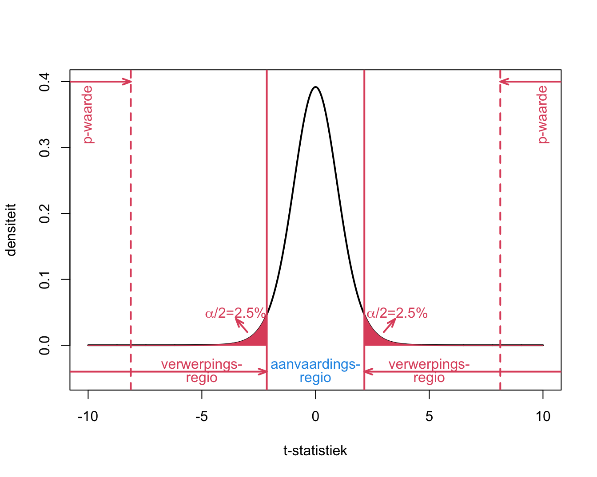
We kunnen ons nu de vraag stellen wanneer we eenzijdig of tweezijdig toetsen. Met een eenzijdige toets kan men gemakkelijker een alternatieve hypothese aantonen (op voorwaarde dat ze waar is) dan met een tweezijdige toets. Dit komt essentieel omdat bij zo’n toets alle informatie kan worden aangewend om in 1 enkele richting te zoeken. Precies daarom vergt de eenzijdige toets een extra beschouwing vóór de aanvang van de studie. Ook al hebben we sterke a priori vermoedens, vaak kunnen we niet zeker zijn dat dat zo is. Anders was er immers geen reden om dit te willen toetsen.
Als men een eenzijdige test voorstelt, maar men vindt een resultaat in de andere richting dat formeel statistisch significant is, dan is het niet geschikt om dit te zien als bewijs voor een werkelijk effect in die richting. Dat is omdat de onderzoekers die mogelijkheid uitgesloten hebben bij de planning van de studie en het resultaat daarom zó onverwacht is dat het als een vals positief resultaat kan gezien worden. Een eenzijdige test is om die reden niet aanbevolen. Een tweezijdige toets is altijd verdedigbaar omdat ze in principe toelaat om elke afwijking van de nulhypothese te detecteren. Ze worden daarom het meest gebruikt en ten zeerste aangeraden. Het is nooit toegelaten om een tweezijdige toets in een eenzijdige toets om te zetten op basis van wat men observeert in de gegevens! Anders wordt de type I fout van de toetsingsstrategie niet correct gecontroleerd.
Dat wordt geïllustreerd in de onderstaande simulatie. We evalueren twee strategieën, de correcte tweezijdige test en een test waar we eenzijdig toetsen op basis van het teken van het geobserveerde effect.
set.seed(115)
mu <- 0
sigma <- 9.0
nSim <- 1000
alpha <- 0.05
n <- 15
pvalsCor <-
pvalsInCor <-
array(0,nSim)
for (i in 1:nSim)
{
x <- rnorm(n, mean = mu, sd = sigma)
pvalsCor[i] <- t.test(x)$p.value
if (mean(x)<0)
pvalsInCor[i] <- t.test(
x,
alternative="less")$p.value else
pvalsInCor[i] <- t.test(
x,
alternative="greater")$p.value
}
mean(pvalsCor < 0.05)[1] 0.049mean(pvalsInCor < 0.05)[1] 0.106We zien inderdaad dat de type I fout correct gecontroleerd wordt op het nominaal significantie-niveau \(\alpha\) wanneer we tweezijdig testen en dat dit helemaal niet het geval is wanneer we eenzijdige toetsen op basis van het teken van het geobserveerde effect.
5.6 Geclusterde metingen
De data in studies zijn niet altijd onafhankelijk. Dat heeft zijn consequenties voor het schatten van de standaard errors. Beschouw een studiedesign waarbij voor \(n\) planten, tijdens een bepaalde fase in de groei, de expressie van een bepaald gen 2 maal wordt gemeten om meetfouten te drukken. Men is geïnteresseerd in de gemiddelde genexpressie. Als we met \(Y_{i1}\) en \(Y_{i2}\) de eerste en tweede meting, respectievelijk, voorstellen voor plant \(i=1,...,n\), dan kunnen we dit schatten als
\[\begin{equation*} \bar Y = \sum_{i=1}^n \frac{Y_{i1}+Y_{i2}}{2n} \end{equation*}\]
In de onderstelling dat de \(n\) planten onafhankelijk van elkaar gekozen werden en de eerste en tweede metingen even variabel zijn (d.w.z. \(\text{Var}(Y_{i1})=\text{Var}(Y_{i2})=\sigma^2\)), bedraagt de variantie op dit steekproefgemiddelde
\[\begin{eqnarray*} \text{Var}(\bar Y)&=&\sum_{i=1}^n \frac{\text{Var}(Y_{i1}+Y_{i2})}{4n^2} \\ &=&\sum_{i=1}^n \frac{\sigma^2+\sigma^2+2\text{Cor}(Y_{i1},Y_{i2})\sigma^2}{% 4n^2} \\ &=&\frac{\sigma^2}{2n}\{1+\text{Cor}(Y_{1},Y_{2})\} \end{eqnarray*}\]
Vermits verschillende metingen afkomstig van eenzelfde plant doorgaans positief met elkaar gecorreleerd zijn, is de standard error op \(\bar Y\) dus groter dan wanneer de \(2n\) metingen van \(2n\) verschillende, onafhankelijke planten afkomstig zouden zijn. Dat is omdat, gegeven de eerste meting \(Y_{i1}\), de tweede meting \(Y_{i2}\) geen volledig nieuwe informatie toevoegt en er bijgevolg minder informatie beschikbaar is om het gemiddelde te schatten dan wanneer alle gegevens van verschillende planten afkomstig waren. In het bijzonder, wanneer \(\text{Cor}(Y_{1},Y_{2})=1\), dan levert de tweede meting geen nieuwe informatie en bekomt men eenzelfde nauwkeurigheid als wanneer men slechts 1 meting per plant had bekomen. Wanneer \(\text{Cor}(Y_{1},Y_{2})=0\), dan levert de tweede meting volledig nieuwe informatie en bekomt men eenzelfde nauwkeurigheid als wanneer men 1 meting had bekomen voor \(2n\) i.p.v. \(n\) verschillende planten. Vermits
\[\frac{\sigma^2}{2n}\{1+\text{Cor}(Y_{1},Y_{2})\}\geq \frac{\sigma^2}{2n}\]
Wanneer de correlatie tussen herhaalde genexpressie metingen positief is (hetgeen we verwachten), zal men in de praktijk meer preciese resultaten bekomen door 1 meting te bepalen voor \(2n\) verschillende planten dan door 2 metingen te bepalen voor \(n\) verschillende planten.
5.6.1 Captopril
De metingen in de captopril voorbeeld zijn eveneens geclusterd. We hebben immers twee systolische bloeddrukmetingen per patiënt. 1 meting voor en 1 meting na het toedienen van captopril. We beogen om de gemiddelde bloeddrukverandering \(\mu\) te schatten a.d.h.v. de gegevens
\[(Y_{i1} , Y_{i2}),\]
voor subjecten \(i = 1, ..., n\). En we bekomen de volgende schatting:
\[\bar X = \sum_{i=1}^n \frac{Y_{i2}-Y_{i1}}{n}\]
Uit de rekenregels voor de variantie weten we dat
\[\begin{eqnarray*} \text{Var}\left[\bar X\right]&=&\sum_{i=1}^n \frac{\text{Var}\left[Y_{i1}-Y_{i2}\right]}{n^2}\\ &=&\sum_{i=1}^n \frac{\sigma^2_1+\sigma^2_2-2\text{Cor}\left[Y_{i1},Y_{i2}\right]\sigma_1\sigma_2}{n^2}\\ &=&\frac{\sigma^2_1+\sigma^2_2-2\text{Cor}\left[Y_{i1},Y_{i2}\right]\sigma_1\sigma_2}{n},\\ \end{eqnarray*}\]
In R kunnen we dit als volgt berekenen:
#functie var op een matrix berekent varianties sigma_1^2, sigma_2^2
#covariantie sigma_{12}
vars <- var(captopril[,c("SBPb","SBPa")])
vars SBPb SBPa
SBPb 422.9238 370.7857
SBPa 370.7857 400.1429cor(captopril$SBPa,captopril$SBPb)[1] 0.9013312varXbarDelta <- (vars[1,1]+vars[2,2]-2*vars[1,2])/15
sqrt(varXbarDelta)[1] 2.330883We zien dat de metingen heel sterk gecorreleerd zijn, waardoor de variantie op het verschil veel lager zal liggen dan op de originele metingen.
Gezien we voor elke patiënt twee metingen hebben bestaat een alternatieve methode om de standard error te bepalen erin om alle gecorreleerde metingen tot 1 meting te reduceren. Merk op dat we dit enkel kunnen doen voor gepaarde metingen. Alle resulterende metingen zijn dan onafhankelijk. Concreet kunnen we voor elke patiënt \(i\) in de steekproef het bloeddrukverschil berekenen:
\[X_{i}=Y_{ai}-Y_{bi}\]
en vervolgens standard error op \(\bar X\). In het captopril voorbeeld wordt de schatting
sd(delta)/sqrt(15)[1] 2.330883We zien dat we exact dezelfde schatting voor de standard error bekomen.
Verder zien we ook dat het design een groot voordeel heeft: Aangezien de bloeddrukmetingen voor en na het toedienen van captopril sterk positief gecorreleerd zijn is de variantie van het verschil veel lager dan deze op de originele bloeddrukmetingen. Iedere patiënt in de studie dient immers als zijn eigen controle en op die manier kunnen we de variabiliteit in de bloeddrukmetingen tussen patiënten uit de analyse verwijderen!
Een gepaard experiment is eigenlijk een speciale vorm van een randomized complete block design:
Elke persoon is een blok en
Elke behandeling is getest binnen blok: een controle bloeddrukmeting en een bloeddrukmeting na toedienen van captopril
Tussen de blokken is er inderdaad een grote bron van variabiliteit: e.g. er is een grote variabiliteit tussen blokken! Personen met een hoge bloeddruk voor het toedienen van captopril hebben meestal ook nog steeds een hoge bloeddruk na de captopril behandeling. De standaarddeviatie in de bloeddruk tussen patiënten voor toedienen van captopril bedraagt 20.6 mmHg.
We kunnen het effect van captopril in het gepaard design schatten binnen patient. Door het blokdesign kunnen we dus de variabiliteit tussen patiënten uit de analyse weren. Voor een gepaard design kunnen we dat door b.v. doen a.d.h.v. een analyse op de bloeddrukverschillen te doen. De standaard deviatie op de bloeddruk verschillen tussen patiënten is inderdaad veel lager 9.03.
Hoe kunnen we het captopril experiment verder verbeteren?
5.7 Two-sample t-test
Een two-sample t-test is een statistische toets die werd ontwikkeld om verschillen in gemiddelde te detecteren tussen twee onafhankelijke groepen. We introduceren eerst een motiverende dataset. Men vermoedt dat hinderlijke geur onder de oksels (bromhidrosis) wordt veroorzaakt door specifieke microorganismen die behoren tot de groep van de Corynebacterium spp.. Het is immers niet het zweet dat de geur veroorzaakt, maar de geur is het resultaat van specifieke bacteriën die het zweet metaboliseren. Een andere sterk abundante groep wordt gevormd door de Staphylococcus spp.. In de CMET onderzoeksgroep van de Universiteit Gent wordt onderzoek verricht naar de mogelijkheid van microbiële transplanties in de oksels om mensen van de hinderlijke okselgeur te verlossen. Deze therapie bestaat erin om eerst het oksel-microbioom te verwijderen door een lokale antibiotica behandeling, en vervolgens via een microbiële transplantie de populatie te beïnvloeden. (zie: https://youtu.be/9RIFyqLXdVw )
De primaire onderzoeksvraag: leidt de microbiële transplantatie na zes weken tot een verandering in de relatieve abundantie van Staphylococcus spp. in het oksel microbioom in vergelijking met een placebo behandeling die enkel bestaat uit een antibiotica behandeling? Twintig personen met een hinderlijke okselgeur worden willekeurig toegekend aan twee behandelingsgroepen: placebo (enkel antibiotica) en transplantie (antibiotica, gevolgd door microbiële transplantatie). Zes weken na de start van de behandeling wordt een staal van de huid uit de okselholte genomen en worden de relatieve abundanties van Staphylococcus spp. en Corynebacterium spp. in het microbioom gemeten via DGGE (Denaturing Gradient Gel Electrophoresis).
De dataset bevat de variabelen Staph en Cor die de relatieve abundanties (%) weergeven van Staphylococcus spp. en Corynebacterium spp. De variabele Rel werd berekend als
\[\text{Rel}=\frac{\text{Staph}}{\text{Staph}+\text{Cor}}.\]
Deze variabele is het relatief aandeel van Staphylococcus spp. op het totaal aantal Staphylococcus spp. en Corynebacterium spp..
We gaan hiervoor opnieuw de microbioom data inlezen. De resultaten worden weergegeven in Figuur 5.11.
ap <- read_csv("https://raw.githubusercontent.com/GTPB/PSLS20/master/data/armpit.csv")
head(ap)# A tibble: 6 × 2
trt rel
<chr> <dbl>
1 placebo 55.0
2 placebo 31.8
3 placebo 41.1
4 placebo 59.5
5 placebo 63.6
6 placebo 41.5ap |>
ggplot(aes(x = trt, y = rel)) +
geom_boxplot() +
geom_jitter() +
xlab("Relatieve abundantie") +
ylab("Behandeling")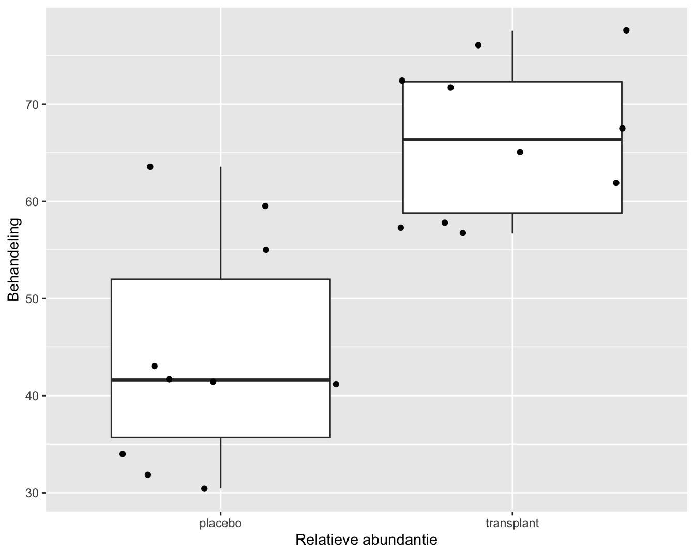
ap$trt <- as.factor(ap$trt) #zet charactervector om in factor
ap |>
ggplot(aes(sample = rel)) +
geom_qq() +
geom_qq_line() +
facet_grid(.~trt) +
ylab("Relatieve abundantie")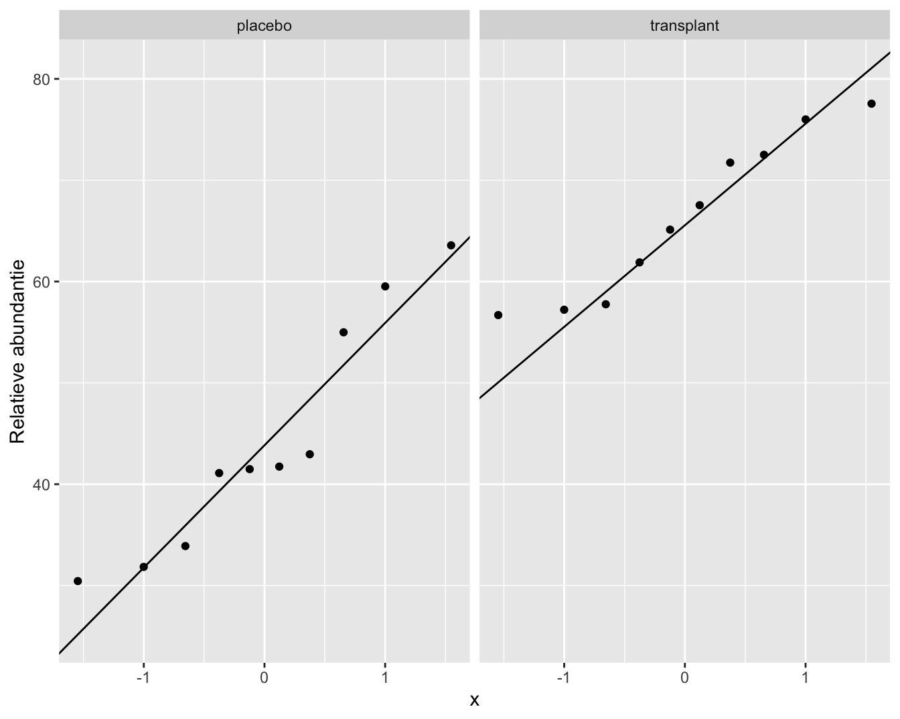
Normaliteit van de data in beide groepen wordt ook nagegaan d.m.v. QQ-plots (zie Figuur 5.12). De QQ-plots geven geen te grote afwijkingen weer van normaliteit.
We introduceren eerst de notatie.
5.7.1 Notatie
Stel \(Y_{ij}\) de uitkomst van observatie \(i=1,\ldots, n_j\) uit populatie \(j=1,2\). We zullen dikwijls de term behandeling of groep gebruiken in plaats van populatie, zelfs wanneer de twee populaties niet geïnterpreteerd kunnen worden als behandelingen. Beschouw het als een (misgroeide) conventie. In de context van het voorbeeld is behandeling \(j=1\) de microbiële transplantatie en behandeling \(j=2\) de placebo behandeling.
We veronderstellen
\[Y_{ij}\text{ i.i.d. } N(\mu_j,\sigma^2)\;\;\;i=1,\ldots,n_i\;j=1,2.\]
Merk op dat dit inhoudt dat gelijke varianties verondersteld worden. De eigenschap van gelijke varianties wordt ook aangeduid met de term homoskedasticiteit, en ongelijke varianties met heteroskedasticiteit.
We zijn geïnteresseerd in het testen van de nulhypothese
\[ H_0: \mu_1 = \mu_2 \]
tegenover de alternatieve hypothese
\[ H_1: \mu_1 \neq \mu_2 .\]
De alternatieve hypothese drukt dus de onderzoeksvraag uit: een verschil in relatieve abundantie van Staphylococcus spp. na microbiële transplantatie t.o.v. de placebo behandeling.
De nul en alternatieve hypothese kunnen ook worden uitgedrukt in termen van de effectgrootte tussen behandeling en placebo groep \(\mu_1-\mu_2\):
\[H_0: \mu_1-\mu_2 = 0,\]
\[H_1: \mu_1-\mu_2 \neq 0.\]
We kunnen de effectgrootte in het experiment schatten a.d.h.v. de steekproefgemiddeldes:
\[\hat \mu_1-\hat \mu_2=\bar Y_1 -\bar Y_2.\]
Gezien de experimentele eenheden onafhankelijk zijn, zijn de steekproefgemiddeldes dat ook en is de variantie op het verschil:
\[\text{Var}_{\bar Y_1 -\bar Y_2}=\frac{\sigma^2}{n_1}+\frac{\sigma^2}{n_2}=\sigma^2 \left(\frac{1}{n_1}+\frac{1}{n_2}\right).\]
De standard error is bijgevolg:
\[\sigma_{\bar Y_1 -\bar Y_2}=\sigma\sqrt{\frac{1}{n_1}+\frac{1}{n_2}}.\]
We zouden de variantie apart kunnen schatten in elke groep aan de hand van de steekproefvariatie, maar als we gelijkheid van variantie kunnen veronderstellen kan de variantie meer precies worden geschat door gebruik te maken van alle gegevens in beide groepen. Deze variatieschatter wordt ook de gepoolde variantieschatter genoemd: \(S^2_p\).
Op basis van de observaties uit de eerste groep kan \(\sigma^2_1\) geschat worden als
\[S_1^2 = \frac{1}{n_1-1}\sum_{i=1}^{n_1} (Y_{i1}-\bar{Y}_1)^2.\]
Analoog: op basis van de observaties uit de tweede groep kan \(\sigma^2_2\) geschat worden als
\[S_2^2 = \frac{1}{n_2-1}\sum_{i=1}^{n_2} (Y_{i2}-\bar{Y}_2)^2.\]
Merk op dat we homoscedasticiteit veronderstellen, \(\sigma_1^2=\sigma_2^2=\sigma^2\). Dus \(S_1^2\) en \(S_2^2\) zijn schatters zijn voor dezelfde parameter \(\sigma^2\). Daarom kunnen ze gezamenlijk gebruikt worden om tot één schatter te komen die alle \(n_1+n_2\) observaties gebruikt:
\[ S_p^2 = \frac{n_1-1}{n_1+n_2-2} S_1^2 + \frac{n_2-1}{n_1+n_2-2} S_2^2 = \frac{1}{n_1+n_2-2}\sum_{j=1}^2\sum_{i=1}^{n_j} (Y_{ij} - \bar{Y}_j)^2.\]
De gepoolde variantieschatter wordt dus geschat door gebruik te maken van de kwadratische afwijkingen tussen de observaties en hun groepsgemiddelde en dat te delen door het aantal vrijheidsgraden \(n_1+n_2-2\)13.
Nu we de effectgrootte en de standard error op de effectgrootte hebben kunnen schatten, kunnen we opnieuw een t-statistiek definiëren (two-sample \(t\)-teststatistiek):
\[T = \frac{\bar{Y}_1-\bar{Y}_2}{\sqrt{\frac{S_p^2}{n_1}+\frac{S_p^2}{n_2}}} = \frac{\bar{Y}_1 - \bar{Y}_2}{S_p\sqrt{\frac{1}{n_1}+\frac{1}{n_2}}}.\]
Als de data onafhankelijk zijn, de steekproefgemiddelden normaal verdeeld zijn en de variantie in beide groepen gelijk zijn, dan kan men aantonen de teststatistiek T opnieuw een t-verdeling volgt met \(n_1+n_2-2\) vrijheidsgraden onder de nulhypothese.
Aangezien de alternatieve hypothese \(H_1: \mu_1 \neq \mu_2\) impliceert dat de probabiliteitsmassa van de distributie van \(T\) onder \(H_1\) verschuift naar hogere of lagere waarden, zullen we \(H_0\) wensen te verwerpen ten gunste van \(H_1\) voor grote absolute waarde van de teststatistiek. De \(p\)-waarde wordt dus
\[\begin{eqnarray*} p&=&\text{P}_0\left[T\leq -|t|\right] + \text{P}_0\left[T\geq |t|\right]\\ &=&\text{P}_0\left[\vert T\vert \geq \vert t \vert\right]\\ &=&\text{P}_0\left[T \geq \vert t \vert\right]\times 2\\ &=& 2\times(1-F_T(\vert t\vert;n_1+n_2-2)), \end{eqnarray*}\]
met \(F_T(\cdot;n_1+n_2-2)\) de cumulatieve distributiefunctie van \(t_{n_1+n_2-2}\).
5.7.2 Oksel-voorbeeld
De onderzoeksvraag van het oksels-voorbeeld kan vertaald worden in een nulhypothese en een alternatieve hypothese.
De nulhypothese verwoordt de stelling dat de behandeling geen effect heeft op de gemiddelde relatieve abundantie van Staphylococcus spp..
Indien \(\mu_1\) en \(\mu_2\) de gemiddelde abundanties voorstellen in respectievelijk de transplantatie groep en de placebo groep, dan schrijven we
\[H_0: \mu_1=\mu_2.\]
De alternatieve hypothese correspondeert met wat we wensen te bewijzen aan de hand van de experimentele data: een verschil in gemiddelde abundantie van Staphylococcus spp. in de transplantatie groep i.v.m. de placebo groep. Dus
\[H_1: \mu_1\neq \mu_2.\]
De R software heeft een specifieke functie voor het uitvoeren van deze \(t\)-test.
t.test(
rel ~ trt,
data = ap,
var.equal=TRUE)
Two Sample t-test
data: rel by trt
t = -5.0334, df = 18, p-value = 8.638e-05
alternative hypothesis: true difference in means between group placebo and group transplant is not equal to 0
95 percent confidence interval:
-31.53191 -12.96072
sample estimates:
mean in group placebo mean in group transplant
44.15496 66.40127 Uit deze analyse lezen we \(p\approx 8.6e-05<<0.05\).
Dus op het \(5\%\) significantieniveau verwerpen we de nulhypothese ten voordele van de alternatieve en besluiten we dat de gemiddelde abundantie van Staphylococcus spp. extreem significant hoger is in de transplantatie groep dan in de placebo groep14.
Indien de transplantatie geen effect heeft op de gemiddelde abundantie van Staphylococcus spp., dan is er de kans om een teststatistiek te bekomen in een willekeurige steekproef die minstens zo extreem is als deze die wij geobserveerd hebben minder dan 9 op \(100000\)!
Dit is uiterst zeldzaam onder de hypothese dat \(H_0\) waar is, en het is kleiner dan \(5\%\) (het significantieniveau). Indien \(H_1\) waar zou zijn, dan verwachten we grotere absolute waarden van de teststatistiek en verwachten we dus ook kleine \(p\)-waarden. Om deze reden wensen we niet verder te geloven dat \(H_0\) waar is, en besluiten we dat er veel evidentie in de steekproefdata zit om te besluiten dat \(H_1\) waar is op het \(5\%\) significantieniveau.
Good statistical practice houdt ook in dat niet enkel de \(p\)-waarde van de hypothesetest wordt gerapporteerd, maar dat ook de gemiddelden en een maat voor de betrouwbaarheid van de schattingen (bv. BI) worden gerapporteerd.
Conclusie Gemiddeld is de relatieve abundantie van Staphylococcus spp. in het microbioom van de oksel in de transplantatie groep extreem significant verschillend van dat in de controle groep (\(p<<0.001\)). De relatieve abundantie van Staphylococcus spp. is gemiddeld -22.2% hoger in de transplantie groep dan in de controle groep (95% BI [-31.5,-13.0]%).
5.8 Aannames
In de voorgaande secties hebben we t-testen geïntroduceerd en de geldigheid ervan hangt af van enkele distributionele veronderstellingen:
- Onafhankelijke gegevens (design)
- One-sample t-test: normaliteit van de steekproefobservaties
- Paired t-test: normaliteit van de verschillen tussen de gepaarde observaties
- Two-sample t-test: normaliteit van de steekproefobservaties in beide groepen, en gelijkheid van varianties.
Indien niet voldaan is aan de veronderstellingen, is de t-distributie niet noodzakelijk de correcte nuldistributie, en bijgevolg is er geen garantie dat de p-waarde en kritieke waarden correct zijn.
Ook voor de constructie van het betrouwbaarheidsinterval van het gemiddelde hebben we beroep gedaan op de veronderstelling van normaliteit. De normaliteitsveronderstelling was nodig om kwantielen uit de t-verdeling te kunnen gebruiken bij het opstellen van de boven- en ondergrens, en de correcte probabiliteitsinterpretatie van het betrouwbaarheidsinterval hangt hiervan af.
5.8.1 Nagaan van de veronderstelling van Normaliteit
Normaliteit kan via de volgende methoden nagegaan worden.
Boxplots en histogrammen
Beide figuren laten toe om een idee te vormen over de vorm van de distributie: symmetrie, outliers.
QQ-plots
Deze plots laten toe om op een grafische wijze na te gaan in welke mate steekproefobservaties zich gedragen als een vooropgestelde distributie.
Hypothesetesten (goodness-of-fit test)
Goodness-of-fit testen zijn statistische hypothesetesten die ontwikkeld zijn voor het testen van de nulhypothese dat de steekproefobservaties uit een vooropgestelde distributie getrokken zijn (hier: normale distributie). De alternatieve hypothese is meestal de negatie van de nulhypothese (hier: geen normaliteit). Bekende testen zijn: Kolmogorov-Smirnov, Shapiro-Wilk en Anderson-Darling.
Op het eerste zicht lijkt een goodness-of-fit test een gemakkelijke en zinvolle oplossing. De methode geeft een \(p\)-waarde en deze laat onmiddellijk toe om te besluiten of de data normaal verdeeld zijn.
Er is echter kritiek te leveren op deze aanpak:
- indien \(p\geq \alpha\), dan is normaliteit niet bewezen! Het zegt enkel dat er onvoldoende evidentie is tegen de veronderstelling van normaliteit. In een kleine steekproef is de kracht van een test meestal klein.
- indien \(p<\alpha\), dan mag wel besloten worden om de nulhypothese te verwerpen en mag dus besloten worden dat de data niet normaal verdeeld zijn, maar soms is een afwijking van normaliteit niet zo erg.
Algemeen advies: Start met een grafische exploratie van de data (boxplots, histogrammen en QQ-plots) en houdt hierbij steeds de steekproefgrootte in het achterhoofd om te vermijden dat je de figuren zou overinterpreteren. Als je twijfelt kan je gebruik maken van simulaties waarbij je nieuwe steekproeven simuleert met eenzelfde steekproefgrootte en data die uit de Normaal verdeling komt met eenzelfde gemiddelde en variantie als wat in de steekproef werd geobserveerd.
Indien een afwijking van normaliteit wordt vastgesteld, tracht dan na te gaan (bv. via literatuur) of de statistische methode die je wenst toe te passen, gevoelig is voor dergelijke afwijkingen (een t-test is bijvoorbeeld vrij ongevoelig voor afwijkingen van Normaliteit als de afwijkingen symmetrisch zijn). Eventueel kan je ook beroep doen op de centrale limietstelling.
5.8.2 Nagaan van homoscedasticiteit
Dat kan opnieuw via boxplots. De grootte van de box is de interkwartiel range (IQR), een robuuste schatter voor de variantie (zie Sectie 4.3.2). Als de verschillen tussen de IQR range van beide groepen niet te groot is, kan men besluiten dat de data homoscedastisch zijn. Opnieuw kan inzicht gekregen worden in dergelijke plots door gebruik te maken van simulaties (zie Oefeningen). Men kan eveneens een formele F-test gebruiken om de varianties te vergelijken (zie oefeningen), maar hiervoor geldt dezelfde kritiek als voor het testen van normaliteit (zie vorige sectie).
Als er bij het vergelijken van gemiddelden tussen twee groepen niet aan homoscedasticiteit is voldaan, kan je gebruik maken van de Welch two-sample T-test. Hierbij wordt de gepoolde variantieschatter niet langer gebruikt.
\[T = \frac{\bar{Y}_1 - \bar{Y}_2}{\sqrt{\frac{S^2_1}{n_1}+\frac{S^2_2}{n_2}}}\]
waarbij \(S^2_1\) en \(S^2_2\) de steekproefvarianties zijn in beide groepen.
Deze statistiek volgt bij benadering een t-verdeling met een aantal vrijheidsgraden dat ligt tussen het kleinste aantal observaties \(\text{min}(n_1-1,n_2-1)\) en \(n_1+n_2-2\). De vrijheidsgraden worden in R berekend via de Welch–Satterthwaite benadering. Dat kan door in de t.test functie het argument var.equal=FALSE te zetten.
t.test(
rel ~ trt,
data = ap,
var.equal=FALSE)
Welch Two Sample t-test
data: rel by trt
t = -5.0334, df = 15.892, p-value = 0.0001249
alternative hypothesis: true difference in means between group placebo and group transplant is not equal to 0
95 percent confidence interval:
-31.62100 -12.87163
sample estimates:
mean in group placebo mean in group transplant
44.15496 66.40127 Merk op dat we in de output zien dat een Welch T-test is uitgevoerd aan de titel boven de analyse. Verder zien we dat voor dit voorbeeld de aangepaste vrijheidsgraden \(df = 17.876\) bijna gelijk zijn aan de vrijheidsgraden van de klassieke T-test, omdat de varianties ongeveer gelijk zijn.
5.9 Wat rapporteren?
- In de wetenschappelijke literatuur is er een overdreven aandacht voor p-waarden.
- Nochtans is het interessanter om een schatting te rapporteren samen met een betrouwbaarheidsinterval (dan met een p-waarde).
Vuistregel: Rapporteer een schatting steeds samen met een betrouwbaarheidsinterval (en een p-waarde), want
- Het resultaat van een toets kan veelal uit een betrouwbaarheidsinterval worden afgeleid;
- Dit laat toe om te oordelen of het resultaat ook wetenschappelijk van belang is.
5.9.1 Reden 1: Relatie toetsen en betrouwbaarheidsintervallen
Stel dat we voor een zekere parameter \(\theta\) (bvb. een populatiegemiddelde, verschil in populatiegemiddelden, odds ratio, regressieparameter) de nulhypothese wensen te toetsen dat \(H_0 : \theta= \theta_0\) versus het alternatief \(H_A : \theta \neq \theta_0\) voor een zeker getal \(\theta_0\). Dan kan men aantonen dat men deze tweezijdige toetsingsprocedure kan uitvoeren op het \(\alpha 100\%\) significantieniveau door de nulhypothese te verwerpen als en slechts als het \((1-\alpha)100\%\) betrouwbaarheidsinterval voor \(\theta\) het getal \(\theta_0\) niet omvat. Met andere woorden, het \((1-\alpha)100\%\) betrouwbaarheidsinterval voor \(\theta\) bevat alle getallen \(\theta_0\) zodat de tweezijdige toets van \(H_0 : \theta= \theta_0\) versus \(H_1 : \theta \neq \theta_0\) de nulhypothese niet verwerpt.
5.9.2 Reden 2: Statistische significantie versus wetenschappelijke relevantie
Een betrouwbaarheidsinterval laat toe om zowel statistische significantie als wetenschappelijk belang van een resultaat te interpreteren.
Stel dat experimentele behandeling significant betere respons oplevert dan standaard/placebo. Een associatie is statistisch significant als P \(< \alpha\), de data dragen m.a.w. voldoende bewijskracht om te besluiten dat er een associatie is. Dan blijft het mogelijk dat het effect wetenschappelijk irrelevant is. Met betrouwbaarheidsintervallen kunnen we dit wel evalueren.
Maar, dat laat echter nog veel subjectiviteit en manipulatie toe. Onderzoekers hopen in de praktijk immers wetenschappelijk belangrijke vondsten te maken en kunnen daarom geneigd zijn om hun oordeel over wat wetenschappelijk belangrijk is, wijzigen in functie van het bekomen betrouwbaarheidsinterval. Om dit te vermijden is het wenselijk dat wetenschappers a priori, d.i. vooraleer de gegevens verzameld werden, hun oordeel over wetenschappelijke relevantie uitdrukken.
5.10 Equivalentie-intervallen
Betrouwbaarheidsintervallen kunnen ook worden gebruikt om na te gaan of twee interventies wetenschappelijk equivalent zijn. Twee interventies worden wetenschappelijk equivalent genoemd als het verschil tussen de populatiegemiddelden \(\mu_1\) en \(\mu_2\) van hun uitkomsten \(X_1\) en \(X_2\) in een equivalentie-interval ligt (dat 0 zal omvatten), bijvoorbeeld:
\[\begin{equation*} (\mu_1 - \mu_2) \in [E_1, E_2] \end{equation*}\]
In de meeste gevallen worden \(E_1\) en \(E_2\) symmetrisch rond nul gekozen, in welk geval \(E_1=-\Delta\) en \(E_2=\Delta\) voor gegeven \(\Delta\). Het (wetenschappelijk) equivalentie-interval wordt dan gegeven door alle koppels \((\mu_1,\mu_2)\) waarvoor
\[\begin{equation*} |\mu_1 - \mu_2| < \Delta \end{equation*}\]
Twee interventies zijn met andere woorden klinisch equivalent wanneer hun verschil in effect verwaarloosbaar klein is vanuit wetenschappelijk oogpunt.
In het vervolg van deze sectie zullen we nagaan of de gemiddelden van 2 onafhankelijke populaties wetenschappelijk equivalent zijn (of wetenschappelijk niet significant van elkaar verschillen). Een eerste stap in dit proces is om op basis van louter wetenschappelijk overwegingen een interval op te stellen waarbinnen het verschil \(\mu_1-\mu_2\) verwaarloosbaar klein kan worden genoemd. Dit gebeurt met hulp van een deskundige die kan oordelen over het belang van een gegeven effectgrootte. Vervolgens wordt het gemiddeld verschil in uitkomst onder beide interventies geschat op basis van de gegevens. Nagaan of dit verschil in het equivalentie-interval gelegen is, volstaat op zich niet om wetenschappelijke equivalentie te kunnen besluiten vermits een klein/groot verschil louter het gevolg kan zijn van biologische variatie. Een logische stap is daarom een bijhorend 95% betrouwbaarheidsinterval voor \(\mu_1 - \mu_2\) te berekenen op basis van de beschikbare gegevens (gepaard, ongepaard, …). De wetenschappelijke equivalentie zal nu bepaald worden door de ligging van het betrouwbaarheidsinterval te vergelijken met het interval van wetenschappelijke equivalentie.
Het zou verkeerd zijn om wetenschappelijke equivalentie te besluiten zodra het equivalentie-interval volledig omsloten is door het 95% betrouwbaarheidsinterval. Inderdaad, kleine steekproeven produceren brede betrouwbaarheidsintervallen zodat men op die manier in kleine steekproeven gemakkelijk equivalentie zou besluiten louter wegens gebrek aan informatie. We volgen daarom de volgende strategie. Noem \(O\) de ondergrens en \(B\) de bovengrens van het 95% betrouwbaarheidsinterval voor \(\mu_1-\mu_2\).
Als \(E_1 < O < B < E_2\), dan is het verschil tussen de populatiegemiddelden met minstens 95% kans binnen de grenzen van wetenschappelijke equivalentie gelegen. Men kan dan met minstens 95% zekerheid besluiten dat de 2 interventies inderdaad wetenschappelijk equivalent zijn.
Als \(E_2 < O\) dan kan men met minstens 95% zekerheid besluiten dat \(\mu_1\) wetenschappelijk significant groter is dan \(\mu_2\). (In dit geval is \(\mu_1\) automatisch ook statistisch significant groter dan \(\mu_2\) op het 2-zijdig significantieniveau 5%).
Als \(B < E_1\) dan kan men met minstens 95% zekerheid besluiten dat \(\mu_1\) wetenschappelijk significant kleiner is dan \(\mu_2.\)
Het resultaat kan ook minder duidelijk zijn.
- Als \(O < E_1 < E_2 < B\) dan is er te weinig informatie om ook maar iets betekenisvol te kunnen besluiten: meer gegevens zijn nodig.
- Als \(O < E_1 < B < E_2\) dan kan men op het 5% significantieniveau besluiten dat \(\mu_1\) niet wetenschappelijk groter is dan \(\mu_2\). In dat geval zijn zowel de opties wetenschappelijk equivalent met \(\mu_2\) als wetenschappelijk significant kleiner dan \(\mu_2\) niet uit te sluiten met 95% zekerheid.
- Analoog voor de symmetrische situatie waarbij \(E_1 < O < E_2 < B.\)
In asthmastudies legt men bijvoorbeeld op voorhand vast dat een verschil in Peak Expiratory Flow (PEF) van 15 l/min klinisch onbelangrijk is. Men bepaald m.a.w. een equivalentie-interval: [-15,15] l/min. Een 95% BI van [-10,-5] l/min voor gemiddeld verschil in PEF tussen twee geneesmiddelen Formoterol en Salbutamol wijst op een onbelangrijk effect, equivalentie. Het betrouwbaarheidsinterval geeft weer hoe groot het verschil kan zijn. Als men een BI van [-25,-16] l/min had bekomen dan kon men besluiten dat het geneesmiddel Formoterol minder efficiënt is gezien het gemiddeld gezien PEF waarden oplevert die wetenschappelijk significant lager zijn dan wanneer Salbutamol wordt toegediend. Als het [-20,-5] l/min zou zijn, dan is er ambiguïteit.
Ook wel Statistische Inferentie genoemd↩︎
Om die reden duiden we ze aan met een hoofdletter.↩︎
Zo is het met 1 observatie voor \(\bar X\) niet mogelijk om een histogram voor \(\bar X\) uit te zetten.↩︎
In principe is een meer theoretische, mathematische ontwikkeling nodig omdit aan te tonen, maar voor het bestek van deze cursus volstaat het om het meer intuïtieve argument aan te nemen.↩︎
Merk op dat de vierkantswortel van een som niet gelijk is aan de som van de vierkantswortels. Bijgevolg is de standaarddeviatie van de som van \(X\) en \(Y\) niet de som van de corresponderende standaarddeviaties!↩︎
Denk zelf maar eens na of je gevallen kunt bedenken waar je al op voorhand, zonder ook maar observaties te zien, de variantie op een bepaalde karakteristiek kent…↩︎
De steekproefstandaarddeviatie is eveneens een toevallig veranderlijke die van steekproef tot steekproef varieert rond werkelijke standaarddeviatie. Hierdoor zal de breedte van de intervallen eveneens variëren↩︎
independent and identically distributed, onafhankelijk en gelijk verdeeld↩︎
vandaar de index 0 bij \(\mu_0\)↩︎
distributie van de teststatistiek onder de nulhypothese↩︎
meer extreem in de richting van \(H_1\)↩︎
In de frequentistische theorie die we hier volgen, is de nulhypothese immers ofwel altijd waar, ofwel altijd vals, en is het dus zelfs niet mogelijk om de kans te definiëren dat de nulhypothese waar is. Teminste, die kans is ofwel 1 ofwel 0.!↩︎
We hebben \(n_1+n_2\) observaties (vrijheidsgraden) in het experiment, om de gepoolde variantie te schatten hebben we echter 2 vrijheidsgraden verloren aangezien we eerst het gemiddelde in elke groep dienden te bepalen om de variantie te kunnen schatten.↩︎
Merk op dat we de richting “significant hoger is in de transplantatie groep” afleiden uit de groepsgemiddelden in de output en/of het BI↩︎